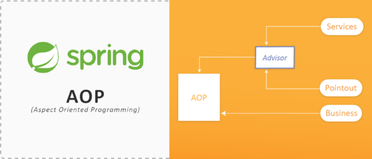

<!DOCTYPE HTML>
<html lang="zh-hans" >
    <head>
        <meta charset="UTF-8">
        <meta content="text/html; charset=utf-8" http-equiv="Content-Type">
        <title>spring-aop-record · stone park gitbook</title>
        <meta http-equiv="X-UA-Compatible" content="IE=edge" />
        <meta name="description" content="">
        <meta name="generator" content="GitBook 3.2.3">
        <meta name="author" content="stone">
        
        
    
    <link rel="stylesheet" href="../../gitbook/style.css">

    
            
                
                <link rel="stylesheet" href="../../gitbook/gitbook-plugin-packt-fontsettings/website.css">
                
            
                
                <link rel="stylesheet" href="../../gitbook/gitbook-plugin-highlight/website.css">
                
            
                
                <link rel="stylesheet" href="../../gitbook/gitbook-plugin-search/search.css">
                
            
                
                <link rel="stylesheet" href="../../gitbook/gitbook-plugin-fontsettings/website.css">
                
            
        

    

    
        
    
        
    
        
    
        
    
        
    
        
    

        
    
    
    
    <meta name="HandheldFriendly" content="true"/>
    <meta name="viewport" content="width=device-width, initial-scale=1, user-scalable=no">
    <meta name="apple-mobile-web-app-capable" content="yes">
    <meta name="apple-mobile-web-app-status-bar-style" content="black">
    <link rel="apple-touch-icon-precomposed" sizes="152x152" href="../../gitbook/images/apple-touch-icon-precomposed-152.png">
    <link rel="shortcut icon" href="../../gitbook/images/favicon.ico" type="image/x-icon">

    
    <link rel="next" href="../vue-config-record/vue-config-record.html" />
    
    
    <link rel="prev" href="../javascript-record/javascript-record.html" />
    

    <style>
    @media only screen and (max-width: 640px) {
        .book-header .hidden-mobile {
            display: none;
        }
    }
    </style>
    <script>
        window["gitbook-plugin-github-buttons"] = {"repo":"stone0117/snbook","types":["star"],"size":"small"};
    </script>

    </head>
    <body>
        
<div class="book">
    <div class="book-summary">
        
            
<div id="book-search-input" role="search">
    <input type="text" placeholder="输入并搜索" />
</div>

            
                <nav role="navigation">
                


<ul class="summary">
    
    

    

    
        
        
    
        <li class="chapter " data-level="1.1" data-path="../../">
            
                <a href="../../">
            
                    
                    records
            
                </a>
            

            
            <ul class="articles">
                
    
        <li class="chapter " data-level="1.1.1" data-path="../Ajv.html/Ajv.html.md">
            
                <span>
            
                    
                    Ajv.html
            
                </a>
            

            
        </li>
    
        <li class="chapter " data-level="1.1.2" data-path="../go-record/go-record.html">
            
                <a href="../go-record/go-record.html">
            
                    
                    go-record
            
                </a>
            

            
        </li>
    
        <li class="chapter " data-level="1.1.3" data-path="../PHP-record/PHP-record.html">
            
                <a href="../PHP-record/PHP-record.html">
            
                    
                    PHP-record
            
                </a>
            

            
        </li>
    
        <li class="chapter " data-level="1.1.4" data-path="../css-record/css-record.html">
            
                <a href="../css-record/css-record.html">
            
                    
                    css-record
            
                </a>
            

            
        </li>
    
        <li class="chapter " data-level="1.1.5" data-path="../git-record/git-record.html">
            
                <a href="../git-record/git-record.html">
            
                    
                    git-record
            
                </a>
            

            
        </li>
    
        <li class="chapter " data-level="1.1.6" data-path="../got-record/got-record.html">
            
                <a href="../got-record/got-record.html">
            
                    
                    got-record
            
                </a>
            

            
        </li>
    
        <li class="chapter " data-level="1.1.7" data-path="../npm-record/npm-record.html">
            
                <a href="../npm-record/npm-record.html">
            
                    
                    npm-record
            
                </a>
            

            
        </li>
    
        <li class="chapter " data-level="1.1.8" data-path="../pod-record/pod-record.html">
            
                <a href="../pod-record/pod-record.html">
            
                    
                    pod-record
            
                </a>
            

            
        </li>
    
        <li class="chapter " data-level="1.1.9" data-path="../rvm-record/rvm-record.html">
            
                <a href="../rvm-record/rvm-record.html">
            
                    
                    rvm-record
            
                </a>
            

            
        </li>
    
        <li class="chapter " data-level="1.1.10" data-path="../ssh-record/ssh-record.html">
            
                <a href="../ssh-record/ssh-record.html">
            
                    
                    ssh-record
            
                </a>
            

            
        </li>
    
        <li class="chapter " data-level="1.1.11" data-path="../ssr-record/ssr-record.html">
            
                <a href="../ssr-record/ssr-record.html">
            
                    
                    ssr-record
            
                </a>
            

            
        </li>
    
        <li class="chapter " data-level="1.1.12" data-path="../vue-record/vue-record.html">
            
                <a href="../vue-record/vue-record.html">
            
                    
                    vue-record
            
                </a>
            

            
        </li>
    
        <li class="chapter " data-level="1.1.13" data-path="../Koa2-record/Koa2-record.html">
            
                <a href="../Koa2-record/Koa2-record.html">
            
                    
                    Koa2-record
            
                </a>
            

            
        </li>
    
        <li class="chapter " data-level="1.1.14" data-path="../MAMP-record/MAMP-record.html">
            
                <a href="../MAMP-record/MAMP-record.html">
            
                    
                    MAMP-record
            
                </a>
            

            
        </li>
    
        <li class="chapter " data-level="1.1.15" data-path="../brew-record/brew-record.html">
            
                <a href="../brew-record/brew-record.html">
            
                    
                    brew-record
            
                </a>
            

            
        </li>
    
        <li class="chapter " data-level="1.1.16" data-path="../cron-record/cron-record.html">
            
                <a href="../cron-record/cron-record.html">
            
                    
                    cron-record
            
                </a>
            

            
        </li>
    
        <li class="chapter " data-level="1.1.17" data-path="../gulp-record/gulp-record.html">
            
                <a href="../gulp-record/gulp-record.html">
            
                    
                    gulp-record
            
                </a>
            

            
        </li>
    
        <li class="chapter " data-level="1.1.18" data-path="../html-record/html-record.html">
            
                <a href="../html-record/html-record.html">
            
                    
                    html-record
            
                </a>
            

            
        </li>
    
        <li class="chapter " data-level="1.1.19" data-path="../java-record/java-record.html">
            
                <a href="../java-record/java-record.html">
            
                    
                    java-record
            
                </a>
            

            
        </li>
    
        <li class="chapter " data-level="1.1.20" data-path="../jenv-record/jenv-record.html">
            
                <a href="../jenv-record/jenv-record.html">
            
                    
                    jenv-record
            
                </a>
            

            
        </li>
    
        <li class="chapter " data-level="1.1.21" data-path="../node-record/node-record.html">
            
                <a href="../node-record/node-record.html">
            
                    
                    node-record
            
                </a>
            

            
        </li>
    
        <li class="chapter " data-level="1.1.22" data-path="../ruby-record/ruby-record.html">
            
                <a href="../ruby-record/ruby-record.html">
            
                    
                    ruby-record
            
                </a>
            

            
        </li>
    
        <li class="chapter " data-level="1.1.23" data-path="../rxjs-record/rxjs-record.html">
            
                <a href="../rxjs-record/rxjs-record.html">
            
                    
                    rxjs-record
            
                </a>
            

            
        </li>
    
        <li class="chapter " data-level="1.1.24" data-path="../trap-record/trap-record.html">
            
                <a href="../trap-record/trap-record.html">
            
                    
                    trap-record
            
                </a>
            

            
        </li>
    
        <li class="chapter " data-level="1.1.25" data-path="../vue3-record/vue3-record.html">
            
                <a href="../vue3-record/vue3-record.html">
            
                    
                    vue3-record
            
                </a>
            

            
        </li>
    
        <li class="chapter " data-level="1.1.26" data-path="../Linux-record/Linux-record.html">
            
                <a href="../Linux-record/Linux-record.html">
            
                    
                    Linux-record
            
                </a>
            

            
        </li>
    
        <li class="chapter " data-level="1.1.27" data-path="../MacOS-record/MacOS-record.html">
            
                <a href="../MacOS-record/MacOS-record.html">
            
                    
                    MacOS-record
            
                </a>
            

            
        </li>
    
        <li class="chapter " data-level="1.1.28" data-path="../Maven-record/Maven-record.html">
            
                <a href="../Maven-record/Maven-record.html">
            
                    
                    Maven-record
            
                </a>
            

            
        </li>
    
        <li class="chapter " data-level="1.1.29" data-path="../Nginx-record/Nginx-record.html">
            
                <a href="../Nginx-record/Nginx-record.html">
            
                    
                    Nginx-record
            
                </a>
            

            
        </li>
    
        <li class="chapter " data-level="1.1.30" data-path="../React-record/React-record.html">
            
                <a href="../React-record/React-record.html">
            
                    
                    React-record
            
                </a>
            

            
        </li>
    
        <li class="chapter " data-level="1.1.31" data-path="../Swift-record/Swift-record.html">
            
                <a href="../Swift-record/Swift-record.html">
            
                    
                    Swift-record
            
                </a>
            

            
        </li>
    
        <li class="chapter " data-level="1.1.32" data-path="../aria2-record/aria2-record.html">
            
                <a href="../aria2-record/aria2-record.html">
            
                    
                    aria2-record
            
                </a>
            

            
        </li>
    
        <li class="chapter " data-level="1.1.33" data-path="../clash-record/clash-record.html">
            
                <a href="../clash-record/clash-record.html">
            
                    
                    clash-record
            
                </a>
            

            
        </li>
    
        <li class="chapter " data-level="1.1.34" data-path="../gitee-record/gitee-record.html">
            
                <a href="../gitee-record/gitee-record.html">
            
                    
                    gitee-record
            
                </a>
            

            
        </li>
    
        <li class="chapter " data-level="1.1.35" data-path="../mysql-record/mysql-record.html">
            
                <a href="../mysql-record/mysql-record.html">
            
                    
                    mysql-record
            
                </a>
            

            
        </li>
    
        <li class="chapter " data-level="1.1.36" data-path="../pyenv-record/pyenv-record.html">
            
                <a href="../pyenv-record/pyenv-record.html">
            
                    
                    pyenv-record
            
                </a>
            

            
        </li>
    
        <li class="chapter " data-level="1.1.37" data-path="../redis-record/redis-record.html">
            
                <a href="../redis-record/redis-record.html">
            
                    
                    redis-record
            
                </a>
            

            
        </li>
    
        <li class="chapter " data-level="1.1.38" data-path="../regex-record/regex-record.html">
            
                <a href="../regex-record/regex-record.html">
            
                    
                    regex-record
            
                </a>
            

            
        </li>
    
        <li class="chapter " data-level="1.1.39" data-path="../shell-record/shell-record.html">
            
                <a href="../shell-record/shell-record.html">
            
                    
                    shell-record
            
                </a>
            

            
        </li>
    
        <li class="chapter " data-level="1.1.40" data-path="../shiro-record/shiro-record.html">
            
                <a href="../shiro-record/shiro-record.html">
            
                    
                    shiro-record
            
                </a>
            

            
        </li>
    
        <li class="chapter " data-level="1.1.41" data-path="../v2ray-record/v2ray-record.html">
            
                <a href="../v2ray-record/v2ray-record.html">
            
                    
                    v2ray-record
            
                </a>
            

            
        </li>
    
        <li class="chapter " data-level="1.1.42" data-path="../Alfred-record/Alfred-record.html">
            
                <a href="../Alfred-record/Alfred-record.html">
            
                    
                    Alfred-record
            
                </a>
            

            
        </li>
    
        <li class="chapter " data-level="1.1.43" data-path="../CentOS-record/CentOS-record.html">
            
                <a href="../CentOS-record/CentOS-record.html">
            
                    
                    CentOS-record
            
                </a>
            

            
        </li>
    
        <li class="chapter " data-level="1.1.44" data-path="../Groovy-record/Groovy-record.html">
            
                <a href="../Groovy-record/Groovy-record.html">
            
                    
                    Groovy-record
            
                </a>
            

            
        </li>
    
        <li class="chapter " data-level="1.1.45" data-path="../JRebel-record/JRebel-record.html">
            
                <a href="../JRebel-record/JRebel-record.html">
            
                    
                    JRebel-record
            
                </a>
            

            
        </li>
    
        <li class="chapter " data-level="1.1.46" data-path="../Linode-record/Linode-record.html">
            
                <a href="../Linode-record/Linode-record.html">
            
                    
                    Linode-record
            
                </a>
            

            
        </li>
    
        <li class="chapter " data-level="1.1.47" data-path="../Scrapy-record/Scrapy-record.html">
            
                <a href="../Scrapy-record/Scrapy-record.html">
            
                    
                    Scrapy-record
            
                </a>
            

            
        </li>
    
        <li class="chapter " data-level="1.1.48" data-path="../chrome-record/chrome-record.html">
            
                <a href="../chrome-record/chrome-record.html">
            
                    
                    chrome-record
            
                </a>
            

            
        </li>
    
        <li class="chapter " data-level="1.1.49" data-path="../docker-record/docker-record.html">
            
                <a href="../docker-record/docker-record.html">
            
                    
                    docker-record
            
                </a>
            

            
        </li>
    
        <li class="chapter " data-level="1.1.50" data-path="../jQuery-record/jQuery-record.html">
            
                <a href="../jQuery-record/jQuery-record.html">
            
                    
                    jQuery-record
            
                </a>
            

            
        </li>
    
        <li class="chapter " data-level="1.1.51" data-path="../lombok-record/lombok-record.html">
            
                <a href="../lombok-record/lombok-record.html">
            
                    
                    lombok-record
            
                </a>
            

            
        </li>
    
        <li class="chapter " data-level="1.1.52" data-path="../python-record/python-record.html">
            
                <a href="../python-record/python-record.html">
            
                    
                    python-record
            
                </a>
            

            
        </li>
    
        <li class="chapter " data-level="1.1.53" data-path="../trojan-record/trojan-record.html">
            
                <a href="../trojan-record/trojan-record.html">
            
                    
                    trojan-record
            
                </a>
            

            
        </li>
    
        <li class="chapter " data-level="1.1.54" data-path="../vscode-record/vscode-record.html">
            
                <a href="../vscode-record/vscode-record.html">
            
                    
                    vscode-record
            
                </a>
            

            
        </li>
    
        <li class="chapter " data-level="1.1.55" data-path="../wechat-record/wechat-record.html">
            
                <a href="../wechat-record/wechat-record.html">
            
                    
                    wechat-record
            
                </a>
            

            
        </li>
    
        <li class="chapter " data-level="1.1.56" data-path="../BigData-record/BigData-record.html">
            
                <a href="../BigData-record/BigData-record.html">
            
                    
                    BigData-record
            
                </a>
            

            
        </li>
    
        <li class="chapter " data-level="1.1.57" data-path="../Mybatis-record/Mybatis-record.html">
            
                <a href="../Mybatis-record/Mybatis-record.html">
            
                    
                    Mybatis-record
            
                </a>
            

            
        </li>
    
        <li class="chapter " data-level="1.1.58" data-path="../Navicat-record/Navicat-record.html">
            
                <a href="../Navicat-record/Navicat-record.html">
            
                    
                    Navicat-record
            
                </a>
            

            
        </li>
    
        <li class="chapter " data-level="1.1.59" data-path="../PyCharm-record/PyCharm-record.html">
            
                <a href="../PyCharm-record/PyCharm-record.html">
            
                    
                    PyCharm-record
            
                </a>
            

            
        </li>
    
        <li class="chapter " data-level="1.1.60" data-path="../express-record/express-record.html">
            
                <a href="../express-record/express-record.html">
            
                    
                    express-record
            
                </a>
            

            
        </li>
    
        <li class="chapter " data-level="1.1.61" data-path="../generic-record/generic-record.html">
            
                <a href="../generic-record/generic-record.html">
            
                    
                    generic-record
            
                </a>
            

            
        </li>
    
        <li class="chapter " data-level="1.1.62" data-path="../mongodb-record/mongodb-record.html">
            
                <a href="../mongodb-record/mongodb-record.html">
            
                    
                    mongodb-record
            
                </a>
            

            
        </li>
    
        <li class="chapter " data-level="1.1.63" data-path="../nodemon-record/nodemon-record.html">
            
                <a href="../nodemon-record/nodemon-record.html">
            
                    
                    nodemon-record
            
                </a>
            

            
        </li>
    
        <li class="chapter " data-level="1.1.64" data-path="../openwrt-record/openwrt-record.html">
            
                <a href="../openwrt-record/openwrt-record.html">
            
                    
                    openwrt-record
            
                </a>
            

            
        </li>
    
        <li class="chapter " data-level="1.1.65" data-path="../phpbrew-record/phpbrew-record.html">
            
                <a href="../phpbrew-record/phpbrew-record.html">
            
                    
                    phpbrew-record
            
                </a>
            

            
        </li>
    
        <li class="chapter " data-level="1.1.66" data-path="../postman-record/postman-record.html">
            
                <a href="../postman-record/postman-record.html">
            
                    
                    postman-record
            
                </a>
            

            
        </li>
    
        <li class="chapter " data-level="1.1.67" data-path="../webpack-record/webpack-record.html">
            
                <a href="../webpack-record/webpack-record.html">
            
                    
                    webpack-record
            
                </a>
            

            
        </li>
    
        <li class="chapter " data-level="1.1.68" data-path="../windows-record/windows-record.html">
            
                <a href="../windows-record/windows-record.html">
            
                    
                    windows-record
            
                </a>
            

            
        </li>
    
        <li class="chapter " data-level="1.1.69" data-path="../ruby-api-record/ruby-api-record.html">
            
                <a href="../ruby-api-record/ruby-api-record.html">
            
                    
                    ruby-api-record
            
                </a>
            

            
        </li>
    
        <li class="chapter " data-level="1.1.70" data-path="../webstorm-record/webstorm-record.html">
            
                <a href="../webstorm-record/webstorm-record.html">
            
                    
                    webstorm-record
            
                </a>
            

            
        </li>
    
        <li class="chapter " data-level="1.1.71" data-path="../cocoapods-record/cocoapods-record.html">
            
                <a href="../cocoapods-record/cocoapods-record.html">
            
                    
                    cocoapods-record
            
                </a>
            

            
        </li>
    
        <li class="chapter " data-level="1.1.72" data-path="../decorator-record/decorator-record.html">
            
                <a href="../decorator-record/decorator-record.html">
            
                    
                    decorator-record
            
                </a>
            

            
        </li>
    
        <li class="chapter " data-level="1.1.73" data-path="../idea-hack-record/idea-hack-record.html">
            
                <a href="../idea-hack-record/idea-hack-record.html">
            
                    
                    idea-hack-record
            
                </a>
            

            
        </li>
    
        <li class="chapter " data-level="1.1.74" data-path="../oh-my-zsh-record/oh-my-zsh-record.html">
            
                <a href="../oh-my-zsh-record/oh-my-zsh-record.html">
            
                    
                    oh-my-zsh-record
            
                </a>
            

            
        </li>
    
        <li class="chapter " data-level="1.1.75" data-path="../puppeteer-record/puppeteer-record.html">
            
                <a href="../puppeteer-record/puppeteer-record.html">
            
                    
                    puppeteer-record
            
                </a>
            

            
        </li>
    
        <li class="chapter " data-level="1.1.76" data-path="../secureCRT-record/secureCRT-record.html">
            
                <a href="../secureCRT-record/secureCRT-record.html">
            
                    
                    secureCRT-record
            
                </a>
            

            
        </li>
    
        <li class="chapter " data-level="1.1.77" data-path="../vmoptions-record/vmoptions-record.html">
            
                <a href="../vmoptions-record/vmoptions-record.html">
            
                    
                    vmoptions-record
            
                </a>
            

            
        </li>
    
        <li class="chapter " data-level="1.1.78" data-path="../Typescript-record/Typescript-record.html">
            
                <a href="../Typescript-record/Typescript-record.html">
            
                    
                    Typescript-record
            
                </a>
            

            
        </li>
    
        <li class="chapter " data-level="1.1.79" data-path="../freemarker-record/freemarker-record.html">
            
                <a href="../freemarker-record/freemarker-record.html">
            
                    
                    freemarker-record
            
                </a>
            

            
        </li>
    
        <li class="chapter " data-level="1.1.80" data-path="../javascript-record/javascript-record.html">
            
                <a href="../javascript-record/javascript-record.html">
            
                    
                    javascript-record
            
                </a>
            

            
        </li>
    
        <li class="chapter active" data-level="1.1.81" data-path="spring-aop-record.html">
            
                <a href="spring-aop-record.html">
            
                    
                    spring-aop-record
            
                </a>
            

            
        </li>
    
        <li class="chapter " data-level="1.1.82" data-path="../vue-config-record/vue-config-record.html">
            
                <a href="../vue-config-record/vue-config-record.html">
            
                    
                    vue-config-record
            
                </a>
            

            
        </li>
    
        <li class="chapter " data-level="1.1.83" data-path="../vue-router-record/vue-router-record.html">
            
                <a href="../vue-router-record/vue-router-record.html">
            
                    
                    vue-router-record
            
                </a>
            

            
        </li>
    
        <li class="chapter " data-level="1.1.84" data-path="../xcodebuild-record/xcodebuild-record.html">
            
                <a href="../xcodebuild-record/xcodebuild-record.html">
            
                    
                    xcodebuild-record
            
                </a>
            

            
        </li>
    
        <li class="chapter " data-level="1.1.85" data-path="../Applescript-record/Applescript-record.html">
            
                <a href="../Applescript-record/Applescript-record.html">
            
                    
                    Applescript-record
            
                </a>
            

            
        </li>
    
        <li class="chapter " data-level="1.1.86" data-path="../Objective-C-record/Objective-C-record.html">
            
                <a href="../Objective-C-record/Objective-C-record.html">
            
                    
                    Objective-C-record
            
                </a>
            

            
        </li>
    
        <li class="chapter " data-level="1.1.87" data-path="../RubyOnRails-record/RubyOnRails-record.html">
            
                <a href="../RubyOnRails-record/RubyOnRails-record.html">
            
                    
                    RubyOnRails-record
            
                </a>
            

            
        </li>
    
        <li class="chapter " data-level="1.1.88" data-path="../http-client-record/http-client-record.html">
            
                <a href="../http-client-record/http-client-record.html">
            
                    
                    http-client-record
            
                </a>
            

            
        </li>
    
        <li class="chapter " data-level="1.1.89" data-path="../soundflower-record/soundflower-record.html">
            
                <a href="../soundflower-record/soundflower-record.html">
            
                    
                    soundflower-record
            
                </a>
            

            
        </li>
    
        <li class="chapter " data-level="1.1.90" data-path="../spring-boot-record/spring-boot-record.html">
            
                <a href="../spring-boot-record/spring-boot-record.html">
            
                    
                    spring-boot-record
            
                </a>
            

            
        </li>
    
        <li class="chapter " data-level="1.1.91" data-path="../ECMAScript_6-record/ECMAScript_6-record.html">
            
                <a href="../ECMAScript_6-record/ECMAScript_6-record.html">
            
                    
                    ECMAScript_6-record
            
                </a>
            

            
        </li>
    
        <li class="chapter " data-level="1.1.92" data-path="../SwitchyOmega-record/SwitchyOmega-record.html">
            
                <a href="../SwitchyOmega-record/SwitchyOmega-record.html">
            
                    
                    SwitchyOmega-record
            
                </a>
            

            
        </li>
    
        <li class="chapter " data-level="1.1.93" data-path="../google-cloud-record/google-cloud-record.html">
            
                <a href="../google-cloud-record/google-cloud-record.html">
            
                    
                    google-cloud-record
            
                </a>
            

            
        </li>
    
        <li class="chapter " data-level="1.1.94" data-path="../spring-cloud-record/spring-cloud-record.html">
            
                <a href="../spring-cloud-record/spring-cloud-record.html">
            
                    
                    spring-cloud-record
            
                </a>
            

            
        </li>
    
        <li class="chapter " data-level="1.1.95" data-path="../vuedraggable-record/vuedraggable-record.html">
            
                <a href="../vuedraggable-record/vuedraggable-record.html">
            
                    
                    vuedraggable-record
            
                </a>
            

            
        </li>
    
        <li class="chapter " data-level="1.1.96" data-path="../IntelliJ_IDEA-record/IntelliJ_IDEA-record.html">
            
                <a href="../IntelliJ_IDEA-record/IntelliJ_IDEA-record.html">
            
                    
                    IntelliJ_IDEA-record
            
                </a>
            

            
        </li>
    
        <li class="chapter " data-level="1.1.97" data-path="../Ubantu16.04.3-record/Ubantu16.04.3-record.html">
            
                <a href="../Ubantu16.04.3-record/Ubantu16.04.3-record.html">
            
                    
                    Ubantu16.04.3-record
            
                </a>
            

            
        </li>
    
        <li class="chapter " data-level="1.1.98" data-path="../Linux-commands-record/Linux-commands-record.html">
            
                <a href="../Linux-commands-record/Linux-commands-record.html">
            
                    
                    Linux-commands-record
            
                </a>
            

            
        </li>
    
        <li class="chapter " data-level="1.1.99" data-path="../proxychains-ng-record/proxychains-ng-record.html">
            
                <a href="../proxychains-ng-record/proxychains-ng-record.html">
            
                    
                    proxychains-ng-record
            
                </a>
            

            
        </li>
    
        <li class="chapter " data-level="1.1.100" data-path="../Alfred-Workflows-record/Alfred-Workflows-record.html">
            
                <a href="../Alfred-Workflows-record/Alfred-Workflows-record.html">
            
                    
                    Alfred-Workflows-record
            
                </a>
            

            
        </li>
    
        <li class="chapter " data-level="1.1.101" data-path="../SpringAnnotation-record/SpringAnnotation-record.html">
            
                <a href="../SpringAnnotation-record/SpringAnnotation-record.html">
            
                    
                    SpringAnnotation-record
            
                </a>
            

            
        </li>
    

            </ul>
            
        </li>
    

    

    <li class="divider"></li>

    <li>
        <a href="https://www.gitbook.com" target="blank" class="gitbook-link">
            本书使用 GitBook 发布
        </a>
    </li>
</ul>


                </nav>
            
        
    </div>

    <div class="book-body">
        
            <div class="body-inner">
                
                    

<div class="book-header" role="navigation">
    

    <!-- Title -->
    <h1>
        <i class="fa fa-circle-o-notch fa-spin"></i>
        <a href="../.." >spring-aop-record</a>
    </h1>
</div>


                    <div class="page-wrapper" tabindex="-1" role="main">
                        <div class="page-inner">
                            
<div id="book-search-results">
    <div class="search-noresults">
    
                                <section class="normal markdown-section">
                                
                                <p>@(&#x5DE5;&#x4F5C;&#x7B14;&#x8BB0;)</p>
<h1 id="spring-aop-record">spring-aop-record</h1>
<p></p>
<p>[TOC]</p>
<hr>
<ul>
<li>Springboot apo &#x600E;&#x4E48;&#x5DE5;&#x4F5C;&#x7684;?</li>
</ul>
<blockquote>
<p>@SpringBootApplication -&gt; @EnableAutoConfiguration -&gt; @Import(AutoConfigurationImportSelector.class)</p>
<p>AutoConfigurationImportSelector.class-&gt;process&#x65B9;&#x6CD5; -&gt;&#x6839;&#x636E;pom&#x91CC;&#x7684;&#x6587;&#x4EF6; &#x4F7F;&#x7528; getAutoConfigurationEntry() &#x7B5B;&#x9009; </p>
<p>&#x6BCF;&#x4E2A;spring-boot-starter&#x5305;&#x91CC;&#x9762;&#x90FD;&#x6709;&#x4E00;&#x4E2A; autoconfigure&#x5305;,  &#x8FD9;&#x4E2A;&#x5305;&#x91CC;&#x9762;&#x6709; META-INF/spring.factories &#x6587;&#x4EF6;, &#x8FD9;&#x662F;&#x914D;&#x7F6E;&#x6587;&#x4EF6;</p>
<p>&#x91CC;&#x9762;&#x6709; &#x914D;&#x7F6E;&#x7C7B;&#x7684;&#x6743;&#x9650;&#x5B9A;&#x7C7B;&#x540D;, &#x8FD9;&#x4E2A;&#x7C7B;&#x662F;&#x914D;&#x7F6E;&#x7C7B;, &#x8BFB;&#x53D6;&#x8FD9;&#x4E2A;&#x914D;&#x7F6E;&#x7C7B; &#x8FBE;&#x5230;&#x81EA;&#x52A8;&#x914D;&#x7F6E;&#x7684;&#x529F;&#x80FD;</p>
</blockquote>
<ul>
<li><pre><code>@ConditionalOnMissingBean

////////////////////////////
@Configuration
@ConditionalOnProperty(name = &quot;shiro.enabled&quot;, matchIfMissing = true)
public class ShiroBeanAutoConfiguration extends AbstractShiroBeanConfiguration {

    @Bean
    @ConditionalOnMissingBean
    @Override
    public LifecycleBeanPostProcessor lifecycleBeanPostProcessor() {
        return super.lifecycleBeanPostProcessor();
    }

    @Bean
    @ConditionalOnMissingBean
    @Override
    protected EventBus eventBus() {
        return super.eventBus();
    }

    @Bean
    @ConditionalOnMissingBean
    @Override
    public ShiroEventBusBeanPostProcessor shiroEventBusAwareBeanPostProcessor() {
        return super.shiroEventBusAwareBeanPostProcessor();
    }
}
</code></pre></li>
<li><p>DependsOn&#x662F;&#x4EC0;&#x4E48;?</p>
</li>
</ul>
<pre><code class="lang-java">  <span class="hljs-meta">@Bean</span>
  <span class="hljs-meta">@DependsOn</span>(<span class="hljs-string">&quot;lifecycleBeanPostProcessor&quot;</span>)
  <span class="hljs-function"><span class="hljs-keyword">public</span> DefaultAdvisorAutoProxyCreator <span class="hljs-title">defaultAdvisorAutoProxyCreator</span><span class="hljs-params">()</span> </span>{
    DefaultAdvisorAutoProxyCreator defaultAdvisorAutoProxyCreator = <span class="hljs-keyword">new</span> DefaultAdvisorAutoProxyCreator();
    defaultAdvisorAutoProxyCreator.setProxyTargetClass(<span class="hljs-keyword">true</span>);
    <span class="hljs-comment">//&#x6DFB;&#x52A0;&#x524D;&#x7F00;&#x5224;&#x65AD; &#x4E0D;&#x5339;&#x914D; &#x4EFB;&#x4F55;Advisor</span>
    defaultAdvisorAutoProxyCreator.setUsePrefix(<span class="hljs-keyword">true</span>);
    defaultAdvisorAutoProxyCreator.setAdvisorBeanNamePrefix(<span class="hljs-string">&quot;_no_advisor&quot;</span>);
    <span class="hljs-keyword">return</span> defaultAdvisorAutoProxyCreator;
  }
</code></pre>
<ul>
<li>lifecycleBeanPostProcessor&#x662F;&#x4EC0;&#x4E48;</li>
<li>DefaultAdvisorAutoProxyCreator&#x7C7B;&#x505A;&#x4EC0;&#x4E48;&#x7684;?</li>
<li>defaultAdvisorAutoProxyCreator.setUsePrefix(true); &#x4F5C;&#x7528;?</li>
<li>&#x81EA;&#x5B9A;&#x4E49;aop&#x8BE5;&#x600E;&#x4E48;&#x5199;?</li>
</ul>
<pre><code class="lang-plain">  &lt;!--
    3.&#x4F7F;&#x7528;AOP&#x5C06;&#x4E8B;&#x52A1;&#x5207;&#x5230;Service&#x5C42;
  --&gt;
  &lt;aop:config&gt;
    &lt;!-- &#x914D;&#x7F6E;&#x5207;&#x5165;&#x70B9; --&gt;
    &lt;aop:pointcut id=&quot;txPointcut&quot; expression=&quot;execution(* ${groupId}.service..*.*(..))&quot; /&gt;
    &lt;!-- &#x914D;&#x7F6E;&#x5207;&#x9762;= &#x5207;&#x5165;&#x70B9;+&#x901A;&#x77E5; --&gt;
    &lt;aop:advisor advice-ref=&quot;txAdvice&quot; pointcut-ref=&quot;txPointcut&quot; /&gt;
  &lt;/aop:config&gt;

  &lt;aop:aspectj-autoproxy proxy-target-class=&quot;true&quot; /&gt;
</code></pre>
<pre><code class="lang-plain">  &lt;!-- &lt;aop:config/&gt; &#x4F1A;&#x626B;&#x63CF;&#x914D;&#x7F6E;&#x6587;&#x4EF6;&#x4E2D;&#x7684;&#x6240;&#x6709;advisor&#xFF0C;&#x5E76;&#x4E3A;&#x5176;&#x521B;&#x5EFA;&#x4EE3;&#x7406; --&gt;
  &lt;aop:config /&gt;
  &lt;!-- Pointcut advisor&#x901A;&#x77E5;&#x5668;&#xFF0C; &#x4F1A;&#x5339;&#x914D;&#x6240;&#x6709;&#x52A0;&#x4E86;shiro&#x6743;&#x9650;&#x6CE8;&#x89E3;&#x7684;&#x65B9;&#x6CD5; --&gt;
  &lt;bean class=&quot;org.apache.shiro.spring.security.interceptor.AuthorizationAttributeSourceAdvisor&quot;&gt;
    &lt;property name=&quot;securityManager&quot; ref=&quot;defaultWebSecurityManager&quot; /&gt;
  &lt;/bean&gt;
</code></pre>
<ul>
<li>@Aspect</li>
<li>@Pointcut</li>
<li>@Around</li>
<li>@AfterThrowing</li>
</ul>
<hr>
<ul>
<li>pointcut [ &#x79F0;&#x4E3A;&#x5207;&#x5165;&#x70B9;, &#x5982; delete &#x65B9;&#x6CD5; ]</li>
</ul>
<blockquote>
<aop:pointcut id="txPointcut" expression="execution(* com.stone.service..*.*(..))">


</aop:pointcut></blockquote>
<ul>
<li>advice[&#x662F;&#x4E2A;&#x63A5;&#x53E3;, &#x6240;&#x4EE5;&#x662F;&#x884C;&#x4E3A;&#x7684;&#x96C6;&#x5408;&#x4F53;] [ &#x79F0;&#x4E3A;&#x589E;&#x5F3A; &#x6216;&#x8005; &#x901A;&#x77E5;, &#x5373; &#x5220;&#x9664;&#x4E4B;&#x524D; &#x8BB0;&#x5F55; &#x8C01;&#x5728;&#x5220;&#x9664; &#x5220;&#x9664;&#x8C01; &#x4EC0;&#x4E48;&#x65F6;&#x5019; ] [&#x7531; aspect &#x6DFB;&#x52A0;&#x5230;&#x7279;&#x5B9A;&#x7684; join point(&#x5373;&#x6EE1;&#x8DB3; point cut &#x89C4;&#x5219;&#x7684; join point) &#x7684;&#x4E00;&#x6BB5;&#x4EE3;&#x7801;]</li>
<li>advisor = advice + pointcut</li>
<li>aspect [&#x79F0;&#x4E3A;&#x5207;&#x9762;, aspect &#x7531; pointcount &#x548C; advice &#x7EC4;&#x6210;]</li>
</ul>
<pre><code class="lang-plain">&lt;aop:aspectj-autoproxy proxy-target-class=&quot;true&quot; /&gt;
</code></pre>
<hr>
<h2 id="aop&#x81EA;&#x52A8;&#x521B;&#x5EFA;&#x4EE3;&#x7406;&#x5BF9;&#x8C61;&#x7684;&#x539F;&#x7406;">Aop&#x81EA;&#x52A8;&#x521B;&#x5EFA;&#x4EE3;&#x7406;&#x5BF9;&#x8C61;&#x7684;&#x539F;&#x7406;</h2>
<p>&#x6211;&#x4EEC;&#x5728;&#x4F7F;&#x7528;Spring Aop&#x65F6;&#xFF0C;&#x901A;&#x5E38;Spring&#x4F1A;&#x81EA;&#x52A8;&#x4E3A;&#x6211;&#x4EEC;&#x521B;&#x5EFA;&#x76EE;&#x6807;bean&#x7684;&#x4EE3;&#x7406;&#x5BF9;&#x8C61;&#xFF0C;&#x4EE5;&#x4F7F;&#x7528;&#x5BF9;&#x5E94;&#x7684;Advisor&#x3002;</p>
<p>&#x524D;&#x63D0;&#x662F;&#x6211;&#x4EEC;&#x5728;&#x4F7F;&#x7528;Spring Aop&#x65F6;&#x662F;&#x4F7F;&#x7528;&#x7684;<code>&lt;aop:config/&gt;</code>&#x6216;<code>&lt;aop:aspectj-autoproxy/&gt;</code>,</p>
<p>&#x8FD9;&#x662F;&#x56E0;&#x4E3A;&#x5F53;&#x6211;&#x4EEC;&#x5728;applicationContext.xml&#x6587;&#x4EF6;&#x4E2D;&#x901A;&#x8FC7;<code>&lt;aop:config/&gt;</code>&#x7684;&#x5F62;&#x5F0F;&#x5B9A;&#x4E49;&#x9700;&#x8981;&#x4F7F;&#x7528;Aop&#x7684;&#x573A;&#x666F;&#x65F6;&#xFF0C;Spring&#x4F1A;&#x81EA;&#x52A8;&#x4E3A;&#x6211;&#x4EEC;&#x6DFB;&#x52A0;AspectjAwareAdvisorAutoProxyCreator&#x7C7B;&#x578B;&#x7684;bean&#xFF1B;</p>
<p>&#x800C;&#x6211;&#x4EEC;&#x5B9A;&#x4E49;&#x4E86;<code>&lt;aop:aspectj-autoproxy/&gt;</code>&#x65F6;&#xFF0C;Spring&#x4F1A;&#x9ED8;&#x8BA4;&#x4E3A;&#x6211;&#x4EEC;&#x6DFB;&#x52A0;AnnotationAwareAspectjAutoProxyCreator&#x7C7B;&#x578B;&#x7684;bean&#x3002;Spring&#x4E2D;&#x5728;bean&#x5B9E;&#x4F8B;&#x5316;&#x540E;&#x80FD;&#x591F;&#x5BF9;bean&#x5BF9;&#x8C61;&#x8FDB;&#x884C;&#x5305;&#x88C5;&#x7684;&#x662F;BeanPostProcessor&#xFF0C;AspectjAwareAdvisorAutoProxyCreator&#x548C;AnnotationAwareAspectjAutoProxyCreator&#x90FD;&#x662F;&#x5B9E;&#x73B0;&#x4E86;BeanPostProcessor&#x63A5;&#x53E3;&#x7684;&#x3002;</p>
<p>AnnotationAwareAspectjAutoProxyCreator&#x7684;&#x7236;&#x7C7B;&#x662F;AspectjAwareAdvisorAutoProxyCreator&#xFF0C;&#x800C;AspectjAwareAdvisorAutoProxyCreator&#x7684;&#x7236;&#x7C7B;&#x662F;AbstractAdvisorAutoProxyCreator&#xFF0C;AbstractAdvisorAutoProxyCreator&#x7684;&#x7236;&#x7C7B;&#x662F;&#x5B9E;&#x73B0;&#x4E86;BeanPostProcessor&#x63A5;&#x53E3;&#x7684;AbstractAutoProxyCreator&#x3002;<strong>&#x5B83;&#x4EEC;&#x7684;&#x6838;&#x5FC3;&#x903B;&#x8F91;&#x90FD;&#x662F;&#x5728;bean&#x521D;&#x59CB;&#x5316;&#x540E;&#x627E;&#x51FA;bean&#x5BB9;&#x5668;&#x4E2D;&#x6240;&#x6709;&#x7684;&#x80FD;&#x591F;&#x5339;&#x914D;&#x5F53;&#x524D;bean&#x7684;Advisor</strong>&#xFF0C;</p>
<p>&#x627E;&#x5230;&#x4E86;&#x5219;&#x5C06;&#x627E;&#x5230;&#x7684;Advisor&#x901A;&#x8FC7;ProxyFactory&#x521B;&#x5EFA;&#x8BE5;bean&#x7684;&#x4EE3;&#x7406;&#x5BF9;&#x8C61;&#x8FD4;&#x56DE;&#x3002;</p>
<p>AspectjAwareAdvisorAutoProxyCreator&#x5728;&#x5BFB;&#x627E;&#x5019;&#x9009;&#x7684;Advisor&#x65F6;&#x4F1A;&#x627E;&#x5230;bean&#x5BB9;&#x5668;&#x4E2D;&#x6240;&#x6709;&#x7684;&#x5B9E;&#x73B0;&#x4E86;Advisor&#x63A5;&#x53E3;&#x7684;bean&#xFF0C;&#x800C;AnnotationAwareAspectjAutoProxyCreator&#x5219;&#x5728;AspectjAwareAdvisorAutoProxyCreator&#x7684;&#x57FA;&#x7840;&#x4E0A;&#x589E;&#x52A0;&#x4E86;&#x5BF9;&#x6807;&#x6CE8;&#x4E86;@Aspect&#x7684;bean&#x7684;&#x5904;&#x7406;&#xFF0C;&#x4F1A;&#x9644;&#x52A0;&#x4E0A;&#x901A;&#x8FC7;@Aspect&#x6807;&#x6CE8;&#x7684;bean&#x4E2D;&#x9690;&#x5F0F;&#x5B9A;&#x4E49;&#x7684;Advisor&#x3002;</p>
<p>&#x6240;&#x4EE5;&#x8FD9;&#x4E5F;&#x662F;&#x4E3A;&#x4EC0;&#x4E48;&#x6211;&#x4EEC;&#x5728;&#x4F7F;&#x7528;@Aspect&#x6807;&#x6CE8;&#x5F62;&#x5F0F;&#x7684;Spring Aop&#x65F6;&#x9700;&#x8981;&#x5728;applicationContext.xml&#x6587;&#x4EF6;&#x4E2D;&#x6DFB;&#x52A0;<code>&lt;aop:aspectj-autoproxy/&gt;</code>&#x3002;</p>
<h2 id="aopaspectj-autoproxy-proxy-target-classtrue-"><code>&lt;aop:aspectj-autoproxy proxy-target-class=&quot;true&quot; /&gt;</code></h2>
<pre><code class="lang-xml">    <span class="hljs-tag">&lt;<span class="hljs-name">xsd:element</span> <span class="hljs-attr">name</span>=<span class="hljs-string">&quot;aspectj-autoproxy&quot;</span>&gt;</span>
        <span class="hljs-tag">&lt;<span class="hljs-name">xsd:annotation</span>&gt;</span>
            <span class="hljs-tag">&lt;<span class="hljs-name">xsd:documentation</span> <span class="hljs-attr">source</span>=<span class="hljs-string">&quot;java:org.springframework.aop.aspectj.annotation.AnnotationAwareAspectJAutoProxyCreator&quot;</span>&gt;</span>&lt;![CDATA[
    Enables the use of the @AspectJ style of Spring AOP.

    See org.springframework.context.annotation.EnableAspectJAutoProxy Javadoc
    for information on code-based alternatives to this XML element.
            ]]&gt;<span class="hljs-tag">&lt;/<span class="hljs-name">xsd:documentation</span>&gt;</span>
        <span class="hljs-tag">&lt;/<span class="hljs-name">xsd:annotation</span>&gt;</span>
</code></pre>
<h2 id="aopconfig"><code>&lt;aop:config&gt;</code></h2>
<pre><code class="lang-xml"><span class="hljs-tag">&lt;<span class="hljs-name">xsd:element</span> <span class="hljs-attr">name</span>=<span class="hljs-string">&quot;config&quot;</span>&gt;</span>
        <span class="hljs-tag">&lt;<span class="hljs-name">xsd:annotation</span>&gt;</span>
            <span class="hljs-tag">&lt;<span class="hljs-name">xsd:documentation</span>&gt;</span>&lt;![CDATA[
    A section (compartmentalization) of AOP-specific configuration (including
    aspects, pointcuts, etc).
            ]]&gt;<span class="hljs-tag">&lt;/<span class="hljs-name">xsd:documentation</span>&gt;</span>
        <span class="hljs-tag">&lt;/<span class="hljs-name">xsd:annotation</span>&gt;</span>
        <span class="hljs-tag">&lt;<span class="hljs-name">xsd:complexType</span>&gt;</span>
            <span class="hljs-tag">&lt;<span class="hljs-name">xsd:sequence</span>&gt;</span>
                <span class="hljs-tag">&lt;<span class="hljs-name">xsd:element</span> <span class="hljs-attr">name</span>=<span class="hljs-string">&quot;pointcut&quot;</span> <span class="hljs-attr">type</span>=<span class="hljs-string">&quot;pointcutType&quot;</span> <span class="hljs-attr">minOccurs</span>=<span class="hljs-string">&quot;0&quot;</span> <span class="hljs-attr">maxOccurs</span>=<span class="hljs-string">&quot;unbounded&quot;</span>&gt;</span>
                    <span class="hljs-tag">&lt;<span class="hljs-name">xsd:annotation</span>&gt;</span>
                        <span class="hljs-tag">&lt;<span class="hljs-name">xsd:documentation</span>&gt;</span>&lt;![CDATA[
    A named pointcut definition.
                        ]]&gt;<span class="hljs-tag">&lt;/<span class="hljs-name">xsd:documentation</span>&gt;</span>
                    <span class="hljs-tag">&lt;/<span class="hljs-name">xsd:annotation</span>&gt;</span>
                <span class="hljs-tag">&lt;/<span class="hljs-name">xsd:element</span>&gt;</span>
                <span class="hljs-tag">&lt;<span class="hljs-name">xsd:element</span> <span class="hljs-attr">name</span>=<span class="hljs-string">&quot;advisor&quot;</span> <span class="hljs-attr">type</span>=<span class="hljs-string">&quot;advisorType&quot;</span> <span class="hljs-attr">minOccurs</span>=<span class="hljs-string">&quot;0&quot;</span> <span class="hljs-attr">maxOccurs</span>=<span class="hljs-string">&quot;unbounded&quot;</span>&gt;</span>
                    <span class="hljs-tag">&lt;<span class="hljs-name">xsd:annotation</span>&gt;</span>
                        <span class="hljs-tag">&lt;<span class="hljs-name">xsd:documentation</span> <span class="hljs-attr">source</span>=<span class="hljs-string">&quot;java:org.springframework.aop.Advisor&quot;</span>&gt;</span>&lt;![CDATA[
    A named advisor definition.
                        ]]&gt;<span class="hljs-tag">&lt;/<span class="hljs-name">xsd:documentation</span>&gt;</span>
                    <span class="hljs-tag">&lt;/<span class="hljs-name">xsd:annotation</span>&gt;</span>
                <span class="hljs-tag">&lt;/<span class="hljs-name">xsd:element</span>&gt;</span>
                <span class="hljs-tag">&lt;<span class="hljs-name">xsd:element</span> <span class="hljs-attr">name</span>=<span class="hljs-string">&quot;aspect&quot;</span> <span class="hljs-attr">type</span>=<span class="hljs-string">&quot;aspectType&quot;</span> <span class="hljs-attr">minOccurs</span>=<span class="hljs-string">&quot;0&quot;</span> <span class="hljs-attr">maxOccurs</span>=<span class="hljs-string">&quot;unbounded&quot;</span>&gt;</span>
                    <span class="hljs-tag">&lt;<span class="hljs-name">xsd:annotation</span>&gt;</span>
                        <span class="hljs-tag">&lt;<span class="hljs-name">xsd:documentation</span>&gt;</span>&lt;![CDATA[
    A named aspect definition.
                        ]]&gt;<span class="hljs-tag">&lt;/<span class="hljs-name">xsd:documentation</span>&gt;</span>
                    <span class="hljs-tag">&lt;/<span class="hljs-name">xsd:annotation</span>&gt;</span>
                <span class="hljs-tag">&lt;/<span class="hljs-name">xsd:element</span>&gt;</span>
            <span class="hljs-tag">&lt;/<span class="hljs-name">xsd:sequence</span>&gt;</span>
            <span class="hljs-tag">&lt;<span class="hljs-name">xsd:attribute</span> <span class="hljs-attr">name</span>=<span class="hljs-string">&quot;proxy-target-class&quot;</span> <span class="hljs-attr">type</span>=<span class="hljs-string">&quot;xsd:boolean&quot;</span> <span class="hljs-attr">default</span>=<span class="hljs-string">&quot;false&quot;</span>&gt;</span>
                <span class="hljs-tag">&lt;<span class="hljs-name">xsd:annotation</span>&gt;</span>
                    <span class="hljs-tag">&lt;<span class="hljs-name">xsd:documentation</span>&gt;</span>&lt;![CDATA[
    Are class-based (CGLIB) proxies to be created? By default, standard
    Java interface-based proxies are created.
                    ]]&gt;<span class="hljs-tag">&lt;/<span class="hljs-name">xsd:documentation</span>&gt;</span>
                <span class="hljs-tag">&lt;/<span class="hljs-name">xsd:annotation</span>&gt;</span>
            <span class="hljs-tag">&lt;/<span class="hljs-name">xsd:attribute</span>&gt;</span>
            <span class="hljs-tag">&lt;<span class="hljs-name">xsd:attribute</span> <span class="hljs-attr">name</span>=<span class="hljs-string">&quot;expose-proxy&quot;</span> <span class="hljs-attr">type</span>=<span class="hljs-string">&quot;xsd:boolean&quot;</span> <span class="hljs-attr">default</span>=<span class="hljs-string">&quot;false&quot;</span>&gt;</span>
                <span class="hljs-tag">&lt;<span class="hljs-name">xsd:annotation</span>&gt;</span>
                    <span class="hljs-tag">&lt;<span class="hljs-name">xsd:documentation</span>&gt;</span>&lt;![CDATA[
    Indicate that the proxy should be exposed by the AOP framework as a
    ThreadLocal for retrieval via the AopContext class. Off by default,
    i.e. no guarantees that AopContext access will work.
                    ]]&gt;<span class="hljs-tag">&lt;/<span class="hljs-name">xsd:documentation</span>&gt;</span>
                <span class="hljs-tag">&lt;/<span class="hljs-name">xsd:annotation</span>&gt;</span>
            <span class="hljs-tag">&lt;/<span class="hljs-name">xsd:attribute</span>&gt;</span>
        <span class="hljs-tag">&lt;/<span class="hljs-name">xsd:complexType</span>&gt;</span>
    <span class="hljs-tag">&lt;/<span class="hljs-name">xsd:element</span>&gt;</span>
</code></pre>
<p>&#x65E2;&#x7136;AspectjAwareAdvisorAutoProxyCreator&#x548C;AnnotationAwareAspectjAutoProxyCreator&#x90FD;&#x4F1A;&#x81EA;&#x52A8;&#x626B;&#x63CF;bean&#x5BB9;&#x5668;&#x4E2D;&#x7684;Advisor&#xFF0C;</p>
<p>&#x6240;&#x4EE5;&#x5F53;&#x6211;&#x4EEC;&#x4F7F;&#x7528;&#x4E86;<code>&lt;aop:config/&gt;</code>&#x6216;<code>&lt;aop:aspectj-autoproxy/&gt;</code>&#x5F62;&#x5F0F;&#x7684;Aop&#x5B9A;&#x4E49;&#x65F6;&#xFF0C;&#x5982;&#x679C;&#x56E0;&#x4E3A;&#x67D0;&#x4E9B;&#x539F;&#x56E0;&#x5149;&#x901A;&#x8FC7;&#x914D;&#x7F6E;&#x6EE1;&#x8DB3;&#x4E0D;&#x4E86;&#x4F60;Aop&#x7684;&#x9700;&#x6C42;&#xFF0C;&#x800C;&#x9700;&#x8981;&#x81EA;&#x5DF1;&#x5B9E;&#x73B0;Advisor&#x63A5;&#x53E3;&#x65F6;&#xFF08;&#x4E00;&#x822C;&#x662F;&#x5B9E;&#x73B0;<code>PointcutAdvisor</code>&#x63A5;&#x53E3;&#xFF09;&#xFF0C;&#x90A3;&#x8FD9;&#x65F6;&#x5019;&#x4F60;&#x53EA;&#x9700;&#x8981;&#x628A;&#x81EA;&#x5DF1;&#x7684;Advisor&#x5B9E;&#x73B0;&#x7C7B;&#xFF0C;&#x5B9A;&#x4E49;&#x4E3A;Spring&#x7684;&#x4E00;&#x4E2A;bean&#x5373;&#x53EF;&#x3002;</p>
<p>&#x5982;&#x679C;&#x4F60;&#x5728;applicationContext.xml&#x4E2D;&#x6CA1;&#x6709;&#x5B9A;&#x4E49;<code>&lt;aop:config/&gt;</code>&#x6216;<code>&lt;aop:aspectj-autoproxy/&gt;</code>&#xFF0C;&#x90A3;&#x4F60;&#x4E5F;&#x53EF;&#x4EE5;&#x76F4;&#x63A5;&#x5728;applicationContext.xml&#x4E2D;&#x76F4;&#x63A5;&#x5B9A;&#x4E49;AspectjAwareAdvisorAutoProxyCreator&#x6216;AnnotationAwareAspectjAutoProxyCreator&#x7C7B;&#x578B;&#x7684;bean&#xFF0C;&#x6548;&#x679C;&#x4E5F;&#x662F;&#x4E00;&#x6837;&#x7684;&#x3002;&#x5176;&#x5B9E;&#x4E3A;&#x4E86;&#x80FD;&#x591F;&#x5728;&#x521B;&#x5EFA;&#x76EE;&#x6807;bean&#x7684;&#x65F6;&#x5019;&#x80FD;&#x591F;&#x81EA;&#x52A8;&#x521B;&#x5EFA;&#x57FA;&#x4E8E;&#x6211;&#x4EEC;&#x81EA;&#x5B9A;&#x4E49;&#x7684;Advisor&#x5B9E;&#x73B0;&#x7C7B;&#x7684;&#x4EE3;&#x7406;&#x5BF9;&#x8C61;&#xFF0C;&#x6211;&#x4EEC;&#x7684;bean&#x5BB9;&#x5668;&#x4E2D;&#x53EA;&#x8981;&#x6709;AbstractAutoProxyCreator&#x7C7B;&#x578B;&#x7684;bean&#x5B9A;&#x4E49;&#x5373;&#x53EF;&#xFF0C;&#x5F53;&#x7136;&#x4E86;&#x4F60;&#x5B9E;&#x73B0;&#x81EA;&#x5DF1;&#x7684;BeanPostProcessor&#xFF0C;&#x5728;&#x5176;postProcessAfterInitialization&#x65B9;&#x6CD5;&#x4E2D;&#x521B;&#x5EFA;&#x81EA;&#x5DF1;&#x7684;&#x4EE3;&#x7406;&#x5BF9;&#x8C61;&#x4E5F;&#x662F;&#x53EF;&#x4EE5;&#x7684;&#x3002;&#x4F46;&#x662F;&#x672C;&#x7740;&#x4E0D;&#x91CD;&#x590D;&#x53D1;&#x660E;&#x8F6E;&#x5B50;&#x7684;&#x539F;&#x5219;&#xFF0C;&#x6211;&#x4EEC;&#x5C3D;&#x91CF;&#x4F7F;&#x7528;&#x5B98;&#x65B9;&#x5DF2;&#x7ECF;&#x63D0;&#x4F9B;&#x597D;&#x7684;&#x5B9E;&#x73B0;&#x5373;&#x53EF;&#x3002;</p>
<p>AbstractAutoProxyCreator&#x662F;&#x7EE7;&#x627F;&#x81EA;ProxyConfig&#x7684;&#xFF0C;&#x6240;&#x4EE5;&#x6211;&#x4EEC;&#x5728;&#x5B9A;&#x4E49;AbstractAutoProxyCreator&#x5B50;&#x7C7B;&#x7684;bean&#x65F6;&#xFF0C;&#x6211;&#x4EEC;&#x4E5F;&#x53EF;&#x4EE5;&#x624B;&#x52A8;&#x7684;&#x5B9A;&#x4E49;&#x4E00;&#x4E9B;ProxyConfig&#x4E2D;&#x5305;&#x542B;&#x7684;&#x5C5E;&#x6027;&#xFF0C;&#x6BD4;&#x5982;proxyTargetClass&#x3001;exposeProxy&#x7B49;&#x3002;</p>
<p>AbstractAutoProxyCreator&#x7684;&#x5B50;&#x7C7B;&#x9664;&#x4E86;AspectjAwareAdvisorAutoProxyCreator&#x548C;AnnotationAwareAspectjAutoProxyCreator&#x5916;&#xFF0C;</p>
<p>&#x6211;&#x4EEC;&#x53EF;&#x7528;&#x7684;&#x8FD8;&#x6709;BeanNameAutoProxyCreator&#x548C;DefaultAdvisorAutoProxyCreator&#x3002;</p>
<h1 id="beannameautoproxycreator">BeanNameAutoProxyCreator</h1>
<p><code>BeanNameAutoProxyCreator</code>&#x53EF;&#x4EE5;&#x7528;&#x6765;&#x5B9A;&#x4E49;&#x54EA;&#x4E9B;bean&#x53EF;&#x4E0E;&#x54EA;&#x4E9B;<code>Advisor/Advice</code>&#x7ED1;&#x5B9A;&#xFF0C;&#x4EE5;&#x751F;&#x6210;&#x5BF9;&#x5E94;&#x7684;&#x4EE3;&#x7406;&#x5BF9;&#x8C61;&#x3002;</p>
<p>&#x9700;&#x8981;&#x7ED1;&#x5B9A;&#x7684;bean&#x662F;&#x901A;&#x8FC7;<code>beanNames</code>&#x5C5E;&#x6027;&#x6765;&#x6307;&#x5B9A;&#x7684;&#xFF0C;&#x5BF9;&#x5E94;&#x7684;&#x662F;bean&#x7684;&#x540D;&#x79F0;&#xFF0C;&#x5176;&#x4E2D;&#x53EF;&#x4EE5;&#x5305;&#x542B;&#x201C;<em>&#x201D;&#x53F7;&#xFF0C;&#x8868;&#x793A;&#x4EFB;&#x610F;&#x5B57;&#x7B26;&#xFF0C;&#x6BD4;&#x5982;&#x201C;abc</em>&#x201D;&#x5219;&#x5339;&#x914D;&#x4EFB;&#x610F;&#x540D;&#x79F0;&#x4EE5;&#x201C;abc&#x201D;&#x5F00;&#x59CB;&#x7684;bean&#xFF1B;&#x9700;&#x8981;&#x7ED1;&#x5B9A;&#x7684;<code>Advisor/Advice</code>&#x662F;&#x901A;&#x8FC7;<code>interceptorNames</code>&#x6765;&#x6307;&#x5B9A;&#x7684;&#xFF0C;&#x5982;&#x679C;&#x6307;&#x5B9A;&#x7684;&#x662F;<code>Advisor</code>&#xFF0C;&#x90A3;&#x4E48;&#x662F;&#x5426;&#x53EF;&#x751F;&#x6210;&#x57FA;&#x4E8E;&#x8BE5;<code>Advisor</code>&#x7684;&#x4EE3;&#x7406;&#x9700;&#x8981;&#x5BF9;&#x5E94;&#x7684;bean&#x80FD;&#x591F;&#x5339;&#x914D;&#x5BF9;&#x5E94;<code>Advisor</code>&#xFF08;<code>PointcutAdvisor</code>&#x7C7B;&#x578B;&#xFF09;&#x7684;<code>Pointcut</code>&#xFF1B;&#x5982;&#x679C;&#x6307;&#x5B9A;&#x7684;&#x662F;<code>Advice</code>&#xFF0C;&#x5219;&#x8BE5;<code>Advice</code>&#x4F1A;&#x88AB;&#x5305;&#x542B;&#x5728;<code>Pointcut</code>&#x6052;&#x5339;&#x914D;&#x7684;<code>Advisor</code>&#x4E2D;&#xFF0C;&#x5373;&#x80FD;&#x591F;&#x4E0E;&#x6240;&#x6709;&#x7684;bean&#x7ED1;&#x5B9A;&#x751F;&#x6210;&#x5BF9;&#x5E94;&#x7684;&#x4EE3;&#x7406;&#xFF0C;&#x4E14;&#x4F1A;&#x5BF9;&#x6240;&#x6709;&#x7684;&#x65B9;&#x6CD5;&#x8C03;&#x7528;&#x8D77;&#x4F5C;&#x7528;&#x3002; &#x6307;&#x5B9A;interceptorNames&#x65F6;&#x662F;&#x4E0D;&#x80FD;&#x4F7F;&#x7528;&#x901A;&#x914D;&#x7B26;&#x7684;&#xFF0C;&#x53EA;&#x80FD;&#x7CBE;&#x786E;&#x7684;&#x6307;&#x5B9A;&#x9700;&#x8981;&#x5E94;&#x7528;&#x7684;<code>Advisor/Advice</code>&#x5BF9;&#x5E94;&#x7684;bean&#x540D;&#x79F0;&#x3002;</p>
<pre><code class="lang-xml">    <span class="hljs-tag">&lt;<span class="hljs-name">bean</span> <span class="hljs-attr">id</span>=<span class="hljs-string">&quot;userService&quot;</span> <span class="hljs-attr">class</span>=<span class="hljs-string">&quot;com.elim.learn.spring.aop.service.UserServiceImpl&quot;</span>/&gt;</span>
    <span class="hljs-tag">&lt;<span class="hljs-name">bean</span> <span class="hljs-attr">id</span>=<span class="hljs-string">&quot;myService&quot;</span> <span class="hljs-attr">class</span>=<span class="hljs-string">&quot;com.elim.learn.spring.aop.service.MyService&quot;</span>/&gt;</span>

    <span class="hljs-tag">&lt;<span class="hljs-name">bean</span> <span class="hljs-attr">class</span>=<span class="hljs-string">&quot;org.springframework.aop.framework.autoproxy.BeanNameAutoProxyCreator&quot;</span>&gt;</span>
        <span class="hljs-comment">&lt;!-- &#x5339;&#x914D;userService&#x548C;&#x6240;&#x6709;&#x540D;&#x79F0;&#x4EE5;my&#x5F00;&#x5934;&#x7684;bean --&gt;</span>
        <span class="hljs-tag">&lt;<span class="hljs-name">property</span> <span class="hljs-attr">name</span>=<span class="hljs-string">&quot;beanNames&quot;</span> <span class="hljs-attr">value</span>=<span class="hljs-string">&quot;userService, my*&quot;</span>/&gt;</span>
        <span class="hljs-comment">&lt;!-- interceptorNames&#x4E2D;&#x4E0D;&#x80FD;&#x4F7F;&#x7528;&#x901A;&#x914D;&#x7B26;&#xFF0C;&#x53EA;&#x80FD;&#x662F;&#x7CBE;&#x786E;&#x5339;&#x914D;&#xFF0C;&#x5373;&#x7CBE;&#x786E;&#x6307;&#x5B9A;Advisor/Advice&#x7684;bean&#x540D;&#x79F0; --&gt;</span>
        <span class="hljs-tag">&lt;<span class="hljs-name">property</span> <span class="hljs-attr">name</span>=<span class="hljs-string">&quot;interceptorNames&quot;</span> <span class="hljs-attr">value</span>=<span class="hljs-string">&quot;logBeforeAdvice, myAdvisor &quot;</span>/&gt;</span>
    <span class="hljs-tag">&lt;/<span class="hljs-name">bean</span>&gt;</span>

    <span class="hljs-tag">&lt;<span class="hljs-name">bean</span> <span class="hljs-attr">id</span>=<span class="hljs-string">&quot;logBeforeAdvice&quot;</span> <span class="hljs-attr">class</span>=<span class="hljs-string">&quot;com.elim.learn.spring.aop.advice.LogBeforeAdvice&quot;</span> /&gt;</span>

    <span class="hljs-tag">&lt;<span class="hljs-name">bean</span> <span class="hljs-attr">id</span>=<span class="hljs-string">&quot;myAdvisor&quot;</span> <span class="hljs-attr">class</span>=<span class="hljs-string">&quot;com.elim.learn.spring.aop.advisor.MyAdvisor&quot;</span>/&gt;</span>12345678910111213
</code></pre>
<p>&#x5982;&#x4E0A;&#x5C31;&#x662F;&#x4E00;&#x4E2A;&#x4F7F;&#x7528;<code>BeanNameAutoProxyCreator</code>&#x5EFA;&#x7ACB;&#x6307;&#x5B9A;&#x7684;bean&#x57FA;&#x4E8E;&#x6307;&#x5B9A;&#x7684;<code>Advisor/Advice</code>&#x7684;&#x4EE3;&#x7406;&#x5BF9;&#x8C61;&#x7684;&#x793A;&#x4F8B;&#x3002;&#x793A;&#x4F8B;&#x4E2D;&#x6211;&#x4EEC;&#x6307;&#x5B9A;interceptorNames&#x65F6;&#x7279;&#x610F;&#x5E94;&#x7528;&#x4E86;&#x4E00;&#x4E2A;<code>Advisor</code>&#x5B9E;&#x73B0;&#x548C;&#x4E00;&#x4E2A;<code>Advice</code>&#x5B9E;&#x73B0;&#x3002;<code>Advice</code>&#x4F1A;&#x5E94;&#x7528;&#x4E8E;&#x6240;&#x6709;&#x7ED1;&#x5B9A;&#x7684;bean&#x7684;&#x6240;&#x6709;&#x65B9;&#x6CD5;&#x8C03;&#x7528;&#xFF0C;&#x800C;<code>Advisor</code>&#x53EA;&#x4F1A;&#x5E94;&#x7528;&#x4E8E;&#x5176;&#x4E2D;&#x7684;Pointcut&#x80FD;&#x591F;&#x5339;&#x914D;&#x7684;&#x65B9;&#x6CD5;&#x8C03;&#x7528;&#x3002;&#x8FD9;&#x91CC;&#x7684;&#x6E90;&#x7801;&#x6211;&#x5C31;&#x4E0D;&#x63D0;&#x4F9B;&#x4E86;&#xFF0C;&#x6709;&#x5174;&#x8DA3;&#x7684;&#x670B;&#x53CB;&#x53EF;&#x4EE5;&#x81EA;&#x5DF1;&#x8BD5;&#x8BD5;&#x3002;</p>
<h1 id="defaultadvisorautoproxycreator">DefaultAdvisorAutoProxyCreator</h1>
<p><code>DefaultAdvisorAutoProxyCreator</code>&#x7684;&#x7236;&#x7C7B;&#x4E5F;&#x662F;<code>AbstractAdvisorAutoProxyCreator</code>&#x3002;<code>DefaultAdvisorAutoProxyCreator</code>&#x7684;&#x4F5C;&#x7528;&#x662F;&#x4F1A;&#x9ED8;&#x8BA4;&#x5C06;bean&#x5BB9;&#x5668;&#x4E2D;&#x6240;&#x6709;&#x7684;<code>Advisor</code>&#x90FD;&#x53D6;&#x5230;&#xFF0C;&#x5982;&#x679C;&#x6709;&#x80FD;&#x591F;&#x5339;&#x914D;&#x67D0;&#x4E00;&#x4E2A;bean&#x7684;<code>Advisor</code>&#x5B58;&#x5728;&#xFF0C;&#x5219;&#x4F1A;&#x57FA;&#x4E8E;&#x80FD;&#x591F;&#x5339;&#x914D;&#x8BE5;bean&#x7684;&#x6240;&#x6709;<code>Advisor</code>&#x521B;&#x5EFA;&#x5BF9;&#x5E94;&#x7684;&#x4EE3;&#x7406;&#x5BF9;&#x8C61;&#x3002;&#x9700;&#x8981;&#x6CE8;&#x610F;&#x7684;&#x662F;<code>DefaultAdvisorAutoProxyCreator</code>&#x5728;&#x521B;&#x5EFA;bean&#x7684;&#x4EE3;&#x7406;&#x5BF9;&#x8C61;&#x65F6;&#x662F;&#x4E0D;&#x4F1A;&#x8003;&#x8651;<code>Advice</code>&#x7684;&#xFF0C;&#x53EA;&#x662F;<code>Advisor</code>&#x3002;&#x5982;&#x4E0A;&#x9762;&#x7684;&#x793A;&#x4F8B;&#x4E2D;&#xFF0C;&#x5982;&#x679C;&#x6211;&#x4EEC;&#x5E0C;&#x671B;&#x6240;&#x6709;&#x7684;bean&#x90FD;&#x80FD;&#x591F;&#x81EA;&#x52A8;&#x7684;&#x4E0E;&#x5339;&#x914D;&#x7684;<code>Advisor</code>&#x8FDB;&#x884C;&#x7ED1;&#x5B9A;&#x751F;&#x6210;&#x5BF9;&#x5E94;&#x7684;&#x4EE3;&#x7406;&#x5BF9;&#x8C61;&#xFF0C;&#x90A3;&#x4E48;&#x6211;&#x4EEC;&#x53EF;&#x4EE5;&#x8C03;&#x6574;&#x914D;&#x7F6E;&#x5982;&#x4E0B;&#x3002;</p>
<pre><code class="lang-xml">    <span class="hljs-tag">&lt;<span class="hljs-name">bean</span> <span class="hljs-attr">id</span>=<span class="hljs-string">&quot;userService&quot;</span> <span class="hljs-attr">class</span>=<span class="hljs-string">&quot;com.elim.learn.spring.aop.service.UserServiceImpl&quot;</span>/&gt;</span>
    <span class="hljs-tag">&lt;<span class="hljs-name">bean</span> <span class="hljs-attr">id</span>=<span class="hljs-string">&quot;myService&quot;</span> <span class="hljs-attr">class</span>=<span class="hljs-string">&quot;com.elim.learn.spring.aop.service.MyService&quot;</span>/&gt;</span>

    <span class="hljs-tag">&lt;<span class="hljs-name">bean</span> <span class="hljs-attr">class</span>=<span class="hljs-string">&quot;org.springframework.aop.framework.autoproxy.DefaultAdvisorAutoProxyCreator&quot;</span>/&gt;</span>

    <span class="hljs-tag">&lt;<span class="hljs-name">bean</span> <span class="hljs-attr">id</span>=<span class="hljs-string">&quot;myAdvisor&quot;</span> <span class="hljs-attr">class</span>=<span class="hljs-string">&quot;com.elim.learn.spring.aop.advisor.MyAdvisor&quot;</span>/&gt;</span>123456
</code></pre>
<p>&#x4F7F;&#x7528;<code>DefaultAdvisorAutoProxyCreator</code>&#x65F6;&#x53EF;&#x80FD;&#x6211;&#x4EEC;&#x5E76;&#x4E0D;&#x5E0C;&#x671B;&#x4E3A;&#x6240;&#x6709;&#x7684;bean&#x5B9A;&#x4E49;&#x90FD;&#x81EA;&#x52A8;&#x5E94;&#x7528;bean&#x5BB9;&#x5668;&#x4E2D;&#x7684;&#x6240;&#x6709;<code>Advisor</code>&#xFF0C;&#x800C;&#x53EA;&#x662F;&#x5E0C;&#x671B;&#x81EA;&#x52A8;&#x521B;&#x5EFA;&#x57FA;&#x4E8E;&#x90E8;&#x5206;<code>Advisor</code>&#x7684;&#x4EE3;&#x7406;&#x5BF9;&#x8C61;&#x3002;&#x8FD9;&#x4E2A;&#x65F6;&#x5019;&#x5982;&#x679C;&#x6211;&#x4EEC;&#x671F;&#x671B;&#x5E94;&#x7528;&#x81EA;&#x52A8;&#x4EE3;&#x7406;&#x7684;<code>Advisor</code>&#x7684;bean&#x5B9A;&#x4E49;&#x7684;&#x540D;&#x79F0;&#x90FD;&#x662F;&#x62E5;&#x6709;&#x56FA;&#x5B9A;&#x7684;&#x524D;&#x7F00;&#x65F6;&#xFF0C;&#x5219;&#x6211;&#x4EEC;&#x53EF;&#x4EE5;&#x5E94;&#x7528;<code>DefaultAdvisorAutoProxyCreator</code>&#x7684;<code>setAdvisorBeanNamePrefix(String)</code>&#x6307;&#x5B9A;&#x9700;&#x8981;&#x5E94;&#x7528;&#x7684;<code>Advisor</code>&#x7684;bean&#x540D;&#x79F0;&#x7684;&#x524D;&#x7F00;&#xFF0C;&#x540C;&#x65F6;&#x9700;&#x8981;&#x901A;&#x8FC7;<code>setUsePrefix(boolean)</code>&#x6307;&#x5B9A;&#x9700;&#x8981;&#x5E94;&#x7528;&#x8FD9;&#x79CD;&#x524D;&#x7F00;&#x5339;&#x914D;&#x673A;&#x5236;&#x3002;&#x5982;&#x6211;&#x4EEC;&#x7684;bean&#x5BB9;&#x5668;&#x4E2D;&#x6709;&#x4E24;&#x4E2A;<code>Advisor</code>&#x5B9A;&#x4E49;&#xFF0C;&#x4E00;&#x4E2A;bean&#x540D;&#x79F0;&#x662F;&#x201C;myAdvisor&#x201D;&#xFF0C;&#x4E00;&#x4E2A;bean&#x540D;&#x79F0;&#x662F;&#x201C;youAdvisor&#x201D;&#xFF0C;&#x5982;&#x679C;&#x53EA;&#x671F;&#x671B;&#x81EA;&#x52A8;&#x521B;&#x5EFA;&#x57FA;&#x4E8E;bean&#x540D;&#x79F0;&#x4EE5;&#x201C;my&#x201D;&#x5F00;&#x59CB;&#x7684;Advisor&#x7684;&#x4EE3;&#x7406;&#xFF0C;&#x5219;&#x53EF;&#x4EE5;&#x8FDB;&#x884C;&#x5982;&#x4E0B;&#x914D;&#x7F6E;&#x3002;</p>
<pre><code class="lang-xml">    <span class="hljs-tag">&lt;<span class="hljs-name">bean</span> <span class="hljs-attr">class</span>=<span class="hljs-string">&quot;org.springframework.aop.framework.autoproxy.DefaultAdvisorAutoProxyCreator&quot;</span>&gt;</span>
        <span class="hljs-tag">&lt;<span class="hljs-name">property</span> <span class="hljs-attr">name</span>=<span class="hljs-string">&quot;usePrefix&quot;</span> <span class="hljs-attr">value</span>=<span class="hljs-string">&quot;true&quot;</span> /&gt;</span>
        <span class="hljs-comment">&lt;!-- &#x5339;&#x914D;&#x6240;&#x6709;bean&#x540D;&#x79F0;&#x4EE5;my&#x5F00;&#x59CB;&#x7684;Advisor --&gt;</span>
        <span class="hljs-tag">&lt;<span class="hljs-name">property</span> <span class="hljs-attr">name</span>=<span class="hljs-string">&quot;advisorBeanNamePrefix&quot;</span> <span class="hljs-attr">value</span>=<span class="hljs-string">&quot;my&quot;</span> /&gt;</span>
    <span class="hljs-tag">&lt;/<span class="hljs-name">bean</span>&gt;</span>
</code></pre>
<hr>
<h2 id="hutool&#x4E2D;&#x5BF9;aspect&#x7684;&#x7406;&#x89E3;">hutool&#x4E2D;&#x5BF9;aspect&#x7684;&#x7406;&#x89E3;</h2>
<pre><code class="lang-java"><span class="hljs-keyword">package</span> cn.hutool.aop.aspects;

<span class="hljs-keyword">import</span> java.lang.reflect.Method;

<span class="hljs-comment">/**
 * &#x5207;&#x9762;&#x63A5;&#x53E3;
 *
 * <span class="hljs-doctag">@author</span> looly
 * <span class="hljs-doctag">@author</span> ted.L
 * <span class="hljs-doctag">@since</span> 4.18
 */</span>
<span class="hljs-keyword">public</span> <span class="hljs-class"><span class="hljs-keyword">interface</span> <span class="hljs-title">Aspect</span> </span>{

    <span class="hljs-comment">/**
     * &#x76EE;&#x6807;&#x65B9;&#x6CD5;&#x6267;&#x884C;&#x524D;&#x7684;&#x64CD;&#x4F5C;
     *
     * <span class="hljs-doctag">@param</span> target &#x76EE;&#x6807;&#x5BF9;&#x8C61;
     * <span class="hljs-doctag">@param</span> method &#x76EE;&#x6807;&#x65B9;&#x6CD5;
     * <span class="hljs-doctag">@param</span> args   &#x53C2;&#x6570;
     * <span class="hljs-doctag">@return</span> &#x662F;&#x5426;&#x7EE7;&#x7EED;&#x6267;&#x884C;&#x63A5;&#x4E0B;&#x6765;&#x7684;&#x64CD;&#x4F5C;
     */</span>
    <span class="hljs-function"><span class="hljs-keyword">boolean</span> <span class="hljs-title">before</span><span class="hljs-params">(Object target, Method method, Object[] args)</span></span>;

    <span class="hljs-comment">/**
     * &#x76EE;&#x6807;&#x65B9;&#x6CD5;&#x6267;&#x884C;&#x540E;&#x7684;&#x64CD;&#x4F5C;
     * &#x5982;&#x679C; target.method &#x629B;&#x51FA;&#x5F02;&#x5E38;&#x4E14;
     *
     * <span class="hljs-doctag">@param</span> target    &#x76EE;&#x6807;&#x5BF9;&#x8C61;
     * <span class="hljs-doctag">@param</span> method    &#x76EE;&#x6807;&#x65B9;&#x6CD5;
     * <span class="hljs-doctag">@param</span> args      &#x53C2;&#x6570;
     * <span class="hljs-doctag">@param</span> returnVal &#x76EE;&#x6807;&#x65B9;&#x6CD5;&#x6267;&#x884C;&#x8FD4;&#x56DE;&#x503C;
     * <span class="hljs-doctag">@return</span> &#x662F;&#x5426;&#x5141;&#x8BB8;&#x8FD4;&#x56DE;&#x503C;&#xFF08;&#x63A5;&#x4E0B;&#x6765;&#x7684;&#x64CD;&#x4F5C;&#xFF09;
     * <span class="hljs-doctag">@see</span> Aspect#afterException &#x8FD4;&#x56DE;true,&#x5219;&#x4E0D;&#x4F1A;&#x6267;&#x884C;&#x6B64;&#x64CD;&#x4F5C;
     * &#x5982;&#x679C;
     * <span class="hljs-doctag">@see</span> Aspect#afterException &#x8FD4;&#x56DE;false,&#x5219;&#x65E0;&#x8BBA;target.method&#x662F;&#x5426;&#x629B;&#x51FA;&#x5F02;&#x5E38;&#xFF0C;&#x5747;&#x4F1A;&#x6267;&#x884C;&#x6B64;&#x64CD;&#x4F5C;
     */</span>
    <span class="hljs-function"><span class="hljs-keyword">boolean</span> <span class="hljs-title">after</span><span class="hljs-params">(Object target, Method method, Object[] args, Object returnVal)</span></span>;

    <span class="hljs-comment">/**
     * &#x76EE;&#x6807;&#x65B9;&#x6CD5;&#x629B;&#x51FA;&#x5F02;&#x5E38;&#x65F6;&#x7684;&#x64CD;&#x4F5C;
     *
     * <span class="hljs-doctag">@param</span> target &#x76EE;&#x6807;&#x5BF9;&#x8C61;
     * <span class="hljs-doctag">@param</span> method &#x76EE;&#x6807;&#x65B9;&#x6CD5;
     * <span class="hljs-doctag">@param</span> args   &#x53C2;&#x6570;
     * <span class="hljs-doctag">@param</span> e      &#x5F02;&#x5E38;
     * <span class="hljs-doctag">@return</span> &#x662F;&#x5426;&#x5141;&#x8BB8;&#x629B;&#x51FA;&#x5F02;&#x5E38;
     */</span>
    <span class="hljs-function"><span class="hljs-keyword">boolean</span> <span class="hljs-title">afterException</span><span class="hljs-params">(Object target, Method method, Object[] args, Throwable e)</span></span>;
}
</code></pre>
<pre><code class="lang-java"><span class="hljs-keyword">public</span> <span class="hljs-class"><span class="hljs-keyword">interface</span> <span class="hljs-title">Advisor</span> </span>{

    <span class="hljs-comment">/**
     * Common placeholder for an empty {<span class="hljs-doctag">@code</span> Advice} to be returned from
     * {<span class="hljs-doctag">@link</span> #getAdvice()} if no proper advice has been configured (yet).
     * <span class="hljs-doctag">@since</span> 5.0
     */</span>
    Advice EMPTY_ADVICE = <span class="hljs-keyword">new</span> Advice() {};


    <span class="hljs-comment">/**
     * Return the advice part of this aspect. An advice may be an
     * interceptor, a before advice, a throws advice, etc.
     * <span class="hljs-doctag">@return</span> the advice that should apply if the pointcut matches
     * <span class="hljs-doctag">@see</span> org.aopalliance.intercept.MethodInterceptor
     * <span class="hljs-doctag">@see</span> BeforeAdvice
     * <span class="hljs-doctag">@see</span> ThrowsAdvice
     * <span class="hljs-doctag">@see</span> AfterReturningAdvice
     */</span>
    <span class="hljs-function">Advice <span class="hljs-title">getAdvice</span><span class="hljs-params">()</span></span>;

    <span class="hljs-comment">/**
     * Return whether this advice is associated with a particular instance
     * (for example, creating a mixin) or shared with all instances of
     * the advised class obtained from the same Spring bean factory.
     * &lt;p&gt;&lt;b&gt;Note that this method is not currently used by the framework.&lt;/b&gt;
     * Typical Advisor implementations always return {<span class="hljs-doctag">@code</span> true}.
     * Use singleton/prototype bean definitions or appropriate programmatic
     * proxy creation to ensure that Advisors have the correct lifecycle model.
     * <span class="hljs-doctag">@return</span> whether this advice is associated with a particular target instance
     */</span>
    <span class="hljs-function"><span class="hljs-keyword">boolean</span> <span class="hljs-title">isPerInstance</span><span class="hljs-params">()</span></span>;

}
</code></pre>
<hr>
<h2 id="spring-aop&#x4E2D;-aopadvisor-&#x4E0E;-aopaspect-&#x7684;&#x533A;&#x522B;"><a href="https://blog.csdn.net/HD243608836/article/details/89437126" target="_blank">spring AOP&#x4E2D; aop:advisor &#x4E0E; aop:aspect &#x7684;&#x533A;&#x522B;</a></h2>
<p>&#x5728;&#x5F00;&#x53D1;&#x8FC7;&#x7A0B;&#x4E2D;&#xFF0C;&#x4E0D;&#x5C11;&#x6709;Spring Aop&#x7684;&#x4F7F;&#x7528;&#xFF0C;
&#x5728;&#x9762;&#x5411;<strong>&#x5207;&#x9762;&#x7F16;&#x7A0B;</strong>&#x65F6;&#xFF0C;&#x6211;&#x4EEC;&#x4F1A;&#x4F7F;&#x7528;&lt; aop:aspect&gt;&#xFF1B;
&#x5728;&#x8FDB;&#x884C;<strong>&#x4E8B;&#x52A1;&#x7BA1;&#x7406;</strong>&#x65F6;&#xFF0C;&#x6211;&#x4EEC;&#x4F1A;&#x4F7F;&#x7528;&lt; aop:advisor&gt;&#x3002;</p>
<h3 id="&#x90A3;&#x4E48;&#xFF0C;&#x5BF9;&#x4E8E;-aopaspect&#x4E0E;-aopadvisor&#x7684;&#x533A;&#x522B;&#xFF0C;&#x5177;&#x4F53;&#x662F;&#x600E;&#x6837;&#x7684;&#x5462;&#xFF1F;">&#x90A3;&#x4E48;&#xFF0C;&#x5BF9;&#x4E8E;&lt; aop:aspect&gt;&#x4E0E;&lt; aop:advisor&gt;&#x7684;&#x533A;&#x522B;&#xFF0C;&#x5177;&#x4F53;&#x662F;&#x600E;&#x6837;&#x7684;&#x5462;&#xFF1F;</h3>
<p>&#x81F3;&#x4E8E;&#x4E24;&#x8005;&#x7684;&#x533A;&#x522B;&#xFF0C;&#x7F51;&#x4E0A;&#x6709;&#x5F88;&#x591A;&#x8D44;&#x6599;&#xFF0C;&#x4F46;&#x662F;&#x4F3C;&#x4E4E;&#x90FD;&#x4E0D;&#x80FD;&#x8BF4;&#x6E05;&#x695A;&#x3002; 
&#x9996;&#x5148;&#xFF0C;&#x6211;&#x4EEC;&#x9700;&#x8981;&#x660E;&#x786E;&#x4E24;&#x8005;&#x7684;&#x6982;&#x5FF5;&#x3002;</p>
<ul>
<li>&lt; aop:aspect&gt;&#xFF1A;&#x5B9A;&#x4E49;&#x5207;&#x9762;&#xFF08;&#x5207;&#x9762;&#x5305;&#x62EC;&#x901A;&#x77E5;&#x548C;&#x5207;&#x70B9;&#xFF09;</li>
<li>&lt; aop:advisor&gt;&#xFF1A;&#x5B9A;&#x4E49;&#x901A;&#x77E5;&#x5668;&#xFF08;&#x901A;&#x77E5;&#x5668;<strong>&#x8DDF;&#x5207;&#x9762;</strong>&#x4E00;&#x6837;&#xFF0C;&#x4E5F;&#x5305;&#x62EC;&#x901A;&#x77E5;&#x548C;&#x5207;&#x70B9;&#xFF09;</li>
</ul>
<p>&#x4E0B;&#x9762;&#xFF0C;&#x6211;&#x4EEC;&#x5217;&#x4E3E;&#x4E24;&#x8005;&#x7684;&#x51E0;&#x4E2A;&#x533A;&#x522B;&#x3002;</p>
<h2 id="1&#x3001;&#x5B9E;&#x73B0;&#x65B9;&#x5F0F;&#x4E0D;&#x540C;">1&#x3001;&#x5B9E;&#x73B0;&#x65B9;&#x5F0F;&#x4E0D;&#x540C;</h2>
<blockquote>
<p>&lt; aop:aspect&gt;&#x5B9A;&#x4E49;&#x5207;&#x9762;&#x65F6;&#xFF0C;&#x53EA;&#x9700;&#x8981;&#x5B9A;&#x4E49;&#x4E00;&#x822C;&#x7684;bean&#x5C31;&#x884C;&#xFF0C;
&#x800C;&#x5B9A;&#x4E49;&lt; aop:advisor&gt;&#x4E2D;&#x5F15;&#x7528;&#x7684;&#x901A;&#x77E5;&#x65F6;&#xFF0C;&#x901A;&#x77E5;&#x5FC5;&#x987B;&#x5B9E;&#x73B0;Advice&#x63A5;&#x53E3;&#x3002;</p>
</blockquote>
<p>&#x4E0B;&#x9762;&#x6211;&#x4EEC;&#x4E3E;&#x4F8B;&#x8BF4;&#x660E;&#x3002; 
&#x9996;&#x5148;&#xFF0C;&#x6211;&#x4EEC;&#x5B9A;&#x4E49;&#x4E00;&#x4E2A;&#x63A5;&#x53E3;Sleepable&#x548C;&#x8FD9;&#x4E2A;&#x63A5;&#x53E3;&#x7684;&#x5B9E;&#x73B0;Human&#xFF0C;&#x4EE3;&#x7801;&#x5982;&#x4E0B;&#xFF1A;</p>
<pre><code class="lang-java"><span class="hljs-keyword">public</span> <span class="hljs-class"><span class="hljs-keyword">interface</span> <span class="hljs-title">Sleepable</span> </span>{
    <span class="hljs-function"><span class="hljs-keyword">public</span> <span class="hljs-keyword">void</span> <span class="hljs-title">sleep</span><span class="hljs-params">()</span></span>;
}
<span class="hljs-keyword">public</span> <span class="hljs-class"><span class="hljs-keyword">class</span> <span class="hljs-title">Human</span> <span class="hljs-keyword">implements</span> <span class="hljs-title">Sleepable</span> </span>{
    <span class="hljs-meta">@Override</span>
    <span class="hljs-function"><span class="hljs-keyword">public</span> <span class="hljs-keyword">void</span> <span class="hljs-title">sleep</span><span class="hljs-params">()</span> </span>{
        System.out.println(<span class="hljs-string">&quot;&#x6211;&#x8981;&#x7761;&#x89C9;&#x4E86;&#xFF01;&quot;</span>);
    }
}
</code></pre>
<p> <strong>&#x4E0B;&#x9762;&#x662F;&lt; aop:advisor&gt;&#x7684;&#x5B9E;&#x73B0;&#x65B9;&#x5F0F;&#xFF1A;</strong></p>
<pre><code>//&#x5B9A;&#x4E49;&#x901A;&#x77E5;
public class SleepHelper implements MethodBeforeAdvice,AfterReturningAdvice{
    @Override
    public void before(Method arg0, Object[] arg1, Object arg2) throws Throwable {
        System.out.println(&quot;&#x7761;&#x89C9;&#x524D;&#x8981;&#x8131;&#x8863;&#x670D;&#xFF01;&quot;);
    }
    @Override
    public void afterReturning(Object arg0, Method arg1, Object[] arg2, Object arg3) throws Throwable {
        System.out.println(&quot;&#x8D77;&#x5E8A;&#x540E;&#x8981;&#x7A7F;&#x8863;&#x670D;&#xFF01;&quot;);
    }
}
//aop&#x914D;&#x7F6E;
&lt;bean id=&quot;sleepHelper&quot; class=&quot;com.ghs.aop.SleepHelper&quot;&gt;&lt;/bean&gt;
&lt;aop:config&gt;
    &lt;aop:pointcut expression=&quot;execution(* *.sleep(..))&quot; id=&quot;sleepPointcut&quot;/&gt;
    &lt;aop:advisor advice-ref=&quot;sleepHelper&quot; pointcut-ref=&quot;sleepPointcut&quot;/&gt;
&lt;/aop:config&gt;
&lt;bean id=&quot;human&quot; class=&quot;com.ghs.aop.Human&quot;/&gt;
</code></pre><p><strong>&#x4E0B;&#x9762;&#x662F;&lt; aop:aspect&gt;&#x7684;&#x5B9E;&#x73B0;&#x65B9;&#x5F0F;&#xFF1A;</strong></p>
<pre><code>//&#x5B9A;&#x4E49;&#x5207;&#x9762;
public class SleepHelperAspect{
    public void beforeSleep(){
        System.out.println(&quot;&#x7761;&#x89C9;&#x524D;&#x8981;&#x8131;&#x8863;&#x670D;&#xFF01;&quot;);
    }
    public void afterSleep(){
        System.out.println(&quot;&#x8D77;&#x5E8A;&#x540E;&#x8981;&#x7A7F;&#x8863;&#x670D;&#xFF01;&quot;);
    }
}
//aop&#x914D;&#x7F6E;
&lt;bean id=&quot;sleepHelperAspect&quot; class=&quot;com.ghs.aop.SleepHelperAspect&quot;&gt;&lt;/bean&gt;
&lt;aop:config&gt;
    &lt;aop:pointcut expression=&quot;execution(* *.sleep(..))&quot; id=&quot;sleepPointcut&quot;/&gt;
    &lt;aop:aspect ref=&quot;sleepHelperAspect&quot;&gt;
        &lt;!--&#x524D;&#x7F6E;&#x901A;&#x77E5;--&gt;
        &lt;aop:before method=&quot;beforeSleep&quot; pointcut-ref=&quot;sleepPointcut&quot;/&gt;
        &lt;!--&#x540E;&#x7F6E;&#x901A;&#x77E5;--&gt;
        &lt;aop:after method=&quot;afterSleep&quot; pointcut-ref=&quot;sleepPointcut&quot;/&gt;
    &lt;/aop:aspect&gt;
&lt;/aop:config&gt;
&lt;bean id=&quot;human&quot; class=&quot;com.ghs.aop.Human&quot;/&gt;
</code></pre><p>&#x6D4B;&#x8BD5;&#x4EE3;&#x7801;&#x5982;&#x4E0B;&#xFF1A;</p>
<pre><code>public class TestAOP {
    public static void main(String[] args) {
        method1();
//      method2();
    }
    private static void method1() {
        ApplicationContext context = new ClassPathXmlApplicationContext(&quot;applicationContext1.xml&quot;);
        Sleepable sleeper = (Sleepable) context.getBean(&quot;human&quot;);
        sleeper.sleep();
    }
    private static void method2() {
        ApplicationContext context = new ClassPathXmlApplicationContext(&quot;applicationContext2.xml&quot;);
        Sleepable sleeper = (Sleepable) context.getBean(&quot;human&quot;);
        sleeper.sleep();
    }
//&#x6267;&#x884C;&#x7ED3;&#x679C;
&#x7761;&#x89C9;&#x524D;&#x8981;&#x8131;&#x8863;&#x670D;&#xFF01;
&#x6211;&#x8981;&#x7761;&#x89C9;&#x4E86;&#xFF01;
&#x8D77;&#x5E8A;&#x540E;&#x8981;&#x7A7F;&#x8863;&#x670D;&#xFF01;
}
</code></pre><h2 id="2&#x3001;&#x4F7F;&#x7528;&#x573A;&#x666F;&#x4E0D;&#x540C;">2&#x3001;&#x4F7F;&#x7528;&#x573A;&#x666F;&#x4E0D;&#x540C;</h2>
<p><strong>&lt; aop:advisor&gt;&#x5927;&#x591A;&#x7528;&#x4E8E;&#x4E8B;&#x52A1;&#x7BA1;&#x7406;&#x3002;</strong> 
&#x4F8B;&#x5982;&#xFF1A;</p>
<pre><code>&lt;!-- &#x4F1A;&#x91CD;&#x590D;&#x8BFB;&#xFF0C;&#x4E0D;&#x4F1A;&#x810F;&#x8BFB;&#x4E8B;&#x52A1; --&gt;
&lt;tx:advice id=&quot;txAdvice&quot; transaction-manager=&quot;transactionManager&quot;&gt;
    &lt;tx:attributes&gt;
        &lt;tx:method name=&quot;*&quot; timeout=&quot;120&quot; propagation=&quot;REQUIRED&quot; rollback-for=&quot;Exception&quot; /&gt;
    &lt;/tx:attributes&gt;
&lt;/tx:advice&gt;

&lt;aop:config proxy-target-class=&quot;true&quot;&gt;
    &lt;aop:pointcut id=&quot;txPointCut&quot; expression=&quot;...&quot;/&gt;
    &lt;aop:advisor advice-ref=&quot;txAdvice&quot; pointcut-ref=&quot;txPointCut&quot; /&gt;
&lt;/aop:config&gt;
</code></pre><p><strong>&lt; aop:aspect&gt;&#x5927;&#x591A;&#x7528;&#x4E8E;&#x65E5;&#x5FD7;&#xFF0C;&#x7F13;&#x5B58;&#x3002;</strong></p>
<p>&#x5176;&#x5B9E;&#xFF0C;&#x4E0D;&#x7BA1;&#x662F;&lt; aop:advisor&gt;&#x8FD8;&#x662F;&lt; aop:aspect&gt;&#x6700;&#x7EC8;&#x7684;&#x5B9E;&#x73B0;&#x903B;&#x8F91;&#x662F;&#x4E00;&#x6837;&#x7684;&#x3002;</p>
<p>&#x5C0F;&#x7ED3;&#xFF1A; 
&#x53EF;&#x4EE5;&#x770B;&#x51FA;&#xFF0C;&lt; aop:advisor&gt;&#x548C;&lt; aop:aspect&gt;&#x5176;&#x5B9E;&#x90FD;&#x662F;&#x5C06;&#x901A;&#x77E5;&#x548C;&#x5207;&#x9762;&#x8FDB;&#x884C;&#x4E86;&#x5C01;&#x88C5;&#xFF0C;&#x539F;&#x7406;&#x57FA;&#x672C;&#x4E0A;&#x662F;&#x4E00;&#x6837;&#x7684;&#xFF0C;&#x53EA;&#x662F;&#x4F7F;&#x7528;&#x7684;&#x65B9;&#x5F0F;&#x4E0D;&#x540C;&#x800C;&#x5DF2;&#x3002;</p>
<p>&#x9644;&#xFF1A; 
&#x5BF9;&#x4E8E;&#x8FD9;&#x4E2A;&#x95EE;&#x9898;&#x7684;&#x7406;&#x89E3;&#xFF0C;&#x5176;&#x5B9E;&#x5C1A;&#x672A;&#x6709;&#x4E00;&#x4E2A;&#x6DF1;&#x5165;&#x7684;&#x8BA4;&#x8BC6;&#xFF0C;&#x4E0B;&#x9762;&#x63A8;&#x8350;&#x5927;&#x5BB6;&#x51E0;&#x7BC7;&#x535A;&#x6587;&#xFF0C;&#x5E0C;&#x671B;&#x5171;&#x540C;&#x4EA4;&#x6D41;&#x3002; 
<a href="http://www.iteye.com/problems/69785" target="_blank">http://www.iteye.com/problems/69785</a> 
<a href="http://blog.sina.com.cn/s/blog_5198c7370100hw1p.html" target="_blank">http://blog.sina.com.cn/s/blog_5198c7370100hw1p.html</a> 
<a href="http://blog.csdn.net/huitoukest/article/details/46469177" target="_blank">http://blog.csdn.net/huitoukest/article/details/46469177</a> 
<a href="http://www.tz365.cn/ask/shenghuo/2016/0804/739237.html" target="_blank">http://www.tz365.cn/ask/shenghuo/2016/0804/739237.html</a> 
<a href="https://zhidao.baidu.com/question/371238289198208804.html" target="_blank">https://zhidao.baidu.com/question/371238289198208804.html</a>
--------------------- </p>
<p>&#x539F;&#x6587;&#xFF1A;<a href="https://blog.csdn.net/u011983531/article/details/70504281" target="_blank">https://blog.csdn.net/u011983531/article/details/70504281</a></p>
<hr>
<h2 id="aopaspectj-autoproxy-"><code>&lt;aop:aspectj-autoproxy /&gt;</code></h2>
<pre><code class="lang-xml"><span class="hljs-tag">&lt;<span class="hljs-name">xsd:element</span> <span class="hljs-attr">name</span>=<span class="hljs-string">&quot;aspectj-autoproxy&quot;</span>&gt;</span>
        <span class="hljs-tag">&lt;<span class="hljs-name">xsd:annotation</span>&gt;</span>
            <span class="hljs-tag">&lt;<span class="hljs-name">xsd:documentation</span> <span class="hljs-attr">source</span>=<span class="hljs-string">&quot;java:org.springframework.aop.aspectj.annotation.AnnotationAwareAspectJAutoProxyCreator&quot;</span>&gt;</span>&lt;![CDATA[
    Enables the use of the @AspectJ style of Spring AOP.

    See org.springframework.context.annotation.EnableAspectJAutoProxy Javadoc
    for information on code-based alternatives to this XML element.
            ]]&gt;<span class="hljs-tag">&lt;/<span class="hljs-name">xsd:documentation</span>&gt;</span>
        <span class="hljs-tag">&lt;/<span class="hljs-name">xsd:annotation</span>&gt;</span>
        <span class="hljs-tag">&lt;<span class="hljs-name">xsd:complexType</span>&gt;</span>
            <span class="hljs-tag">&lt;<span class="hljs-name">xsd:sequence</span>&gt;</span>
                <span class="hljs-tag">&lt;<span class="hljs-name">xsd:element</span> <span class="hljs-attr">name</span>=<span class="hljs-string">&quot;include&quot;</span> <span class="hljs-attr">type</span>=<span class="hljs-string">&quot;includeType&quot;</span> <span class="hljs-attr">minOccurs</span>=<span class="hljs-string">&quot;0&quot;</span> <span class="hljs-attr">maxOccurs</span>=<span class="hljs-string">&quot;unbounded&quot;</span>&gt;</span>
                    <span class="hljs-tag">&lt;<span class="hljs-name">xsd:annotation</span>&gt;</span>
                        <span class="hljs-tag">&lt;<span class="hljs-name">xsd:documentation</span>&gt;</span>&lt;![CDATA[
    Indicates that only @AspectJ beans with names matched by the (regex)
    pattern will be considered as defining aspects to use for Spring autoproxying.
                        ]]&gt;<span class="hljs-tag">&lt;/<span class="hljs-name">xsd:documentation</span>&gt;</span>
                    <span class="hljs-tag">&lt;/<span class="hljs-name">xsd:annotation</span>&gt;</span>
                <span class="hljs-tag">&lt;/<span class="hljs-name">xsd:element</span>&gt;</span>
            <span class="hljs-tag">&lt;/<span class="hljs-name">xsd:sequence</span>&gt;</span>
            <span class="hljs-tag">&lt;<span class="hljs-name">xsd:attribute</span> <span class="hljs-attr">name</span>=<span class="hljs-string">&quot;proxy-target-class&quot;</span> <span class="hljs-attr">type</span>=<span class="hljs-string">&quot;xsd:boolean&quot;</span> <span class="hljs-attr">default</span>=<span class="hljs-string">&quot;false&quot;</span>&gt;</span>
                <span class="hljs-tag">&lt;<span class="hljs-name">xsd:annotation</span>&gt;</span>
                    <span class="hljs-tag">&lt;<span class="hljs-name">xsd:documentation</span>&gt;</span>&lt;![CDATA[
    Are class-based (CGLIB) proxies to be created? By default, standard
    Java interface-based proxies are created.
                    ]]&gt;<span class="hljs-tag">&lt;/<span class="hljs-name">xsd:documentation</span>&gt;</span>
                <span class="hljs-tag">&lt;/<span class="hljs-name">xsd:annotation</span>&gt;</span>
            <span class="hljs-tag">&lt;/<span class="hljs-name">xsd:attribute</span>&gt;</span>
            <span class="hljs-tag">&lt;<span class="hljs-name">xsd:attribute</span> <span class="hljs-attr">name</span>=<span class="hljs-string">&quot;expose-proxy&quot;</span> <span class="hljs-attr">type</span>=<span class="hljs-string">&quot;xsd:boolean&quot;</span> <span class="hljs-attr">default</span>=<span class="hljs-string">&quot;false&quot;</span>&gt;</span>
                <span class="hljs-tag">&lt;<span class="hljs-name">xsd:annotation</span>&gt;</span>
                    <span class="hljs-tag">&lt;<span class="hljs-name">xsd:documentation</span>&gt;</span>&lt;![CDATA[
    Indicate that the proxy should be exposed by the AOP framework as a
    ThreadLocal for retrieval via the AopContext class. Off by default,
    i.e. no guarantees that AopContext access will work.
                    ]]&gt;<span class="hljs-tag">&lt;/<span class="hljs-name">xsd:documentation</span>&gt;</span>
                <span class="hljs-tag">&lt;/<span class="hljs-name">xsd:annotation</span>&gt;</span>
            <span class="hljs-tag">&lt;/<span class="hljs-name">xsd:attribute</span>&gt;</span>
        <span class="hljs-tag">&lt;/<span class="hljs-name">xsd:complexType</span>&gt;</span>
    <span class="hljs-tag">&lt;/<span class="hljs-name">xsd:element</span>&gt;</span>
</code></pre>
<p><strong>proxy-target-class</strong> &#x9ED8;&#x8BA4;&#x662F;false</p>
<p><strong>proxy-target-class=&quot;true&quot; &#x4E0E;proxy-target-class=&quot;false&quot;&#x7684;&#x533A;&#x522B;</strong></p>
<p>proxy-target-class&#x5C5E;&#x6027;&#x503C;&#x51B3;&#x5B9A;&#x662F;&#x57FA;&#x4E8E;&#x63A5;&#x53E3;&#x7684;&#x8FD8;&#x662F;&#x57FA;&#x4E8E;&#x7C7B;&#x7684;&#x4EE3;&#x7406;&#x88AB;&#x521B;&#x5EFA;&#x3002;&#x5982;&#x679C;proxy-target-class &#x5C5E;&#x6027;&#x503C;&#x88AB;&#x8BBE;&#x7F6E;&#x4E3A;true&#xFF0C;&#x90A3;&#x4E48;&#x57FA;&#x4E8E;&#x7C7B;&#x7684;&#x4EE3;&#x7406;&#x5C06;&#x8D77;&#x4F5C;&#x7528;&#xFF08;&#x8FD9;&#x65F6;&#x9700;&#x8981;cglib&#x5E93;&#xFF09;&#x3002;&#x5982;&#x679C;proxy-target-class&#x5C5E;&#x503C;&#x88AB;&#x8BBE;&#x7F6E;&#x4E3A;false&#x6216;&#x8005;&#x8FD9;&#x4E2A;&#x5C5E;&#x6027;&#x88AB;&#x7701;&#x7565;&#xFF0C;&#x90A3;&#x4E48;&#x6807;&#x51C6;&#x7684;JDK &#x57FA;&#x4E8E;&#x63A5;&#x53E3;&#x7684;&#x4EE3;&#x7406;&#x5C06;&#x8D77;&#x4F5C;&#x7528;&#x3002;</p>
<p><strong><aop:aspectj-autoproxy proxy-target-class="false"> &#x57FA;&#x4E8E;&#x63A5;&#x53E3;&#xFF0C;&#x4F7F;&#x7528;JDK&#x52A8;&#x6001;&#x4EE3;&#x7406;</aop:aspectj-autoproxy></strong></p>
<p><strong><aop:aspectj-autoproxy proxy-target-class="true"> &#x57FA;&#x4E8E;&#x7C7B;&#xFF0C;&#x9700;&#x8981;&#x4F7F;&#x7528;cglib&#x5E93;</aop:aspectj-autoproxy></strong></p>
<hr>
<h2 id=""><aop:config></aop:config></h2>
<p>proxy-target-class=&quot;true&quot; &#x8868;&#x793A;&#x5F3A;&#x5236;&#x4F7F;&#x7528; CGLIB &#x6280;&#x672F;&#x6765;&#x5B9E;&#x73B0;AOP&#xFF0C;&#x56E0;&#x4E3A;CGLIB&#x662F;&#x751F;&#x6210;&#x5B50;&#x7C7B;&#x4E5F;&#x5C31;&#x662F;&#x4EE3;&#x7406;&#x7C7B;&#x6765;&#x5B9E;&#x73B0;&#x7684;&#xFF0C;&#x6240;&#x4EE5;proxy-target-class&#xFF0C;&#x8868;&#x793A;&#x662F;&#x5426;&#x4EE3;&#x7406;&#x76EE;&#x6807;&#x7C7B;&#x3002;</p>
<p><aop:config> &#x5C31;&#x4F1A;&#x7531;spring&#x6765;&#x9009;&#x62E9;&#xFF0C;spring&#x4F18;&#x5148;&#x4F7F;&#x7528;JDK&#x52A8;&#x6001;&#x4EE3;&#x7406;&#x6765;&#x5B9E;&#x73B0;AOP&#x3002;</aop:config></p>
<pre><code class="lang-xml"><span class="hljs-tag">&lt;<span class="hljs-name">xsd:element</span> <span class="hljs-attr">name</span>=<span class="hljs-string">&quot;config&quot;</span>&gt;</span>
        <span class="hljs-tag">&lt;<span class="hljs-name">xsd:annotation</span>&gt;</span>
            <span class="hljs-tag">&lt;<span class="hljs-name">xsd:documentation</span>&gt;</span>&lt;![CDATA[
    A section (compartmentalization) of AOP-specific configuration (including
    aspects, pointcuts, etc).
            ]]&gt;<span class="hljs-tag">&lt;/<span class="hljs-name">xsd:documentation</span>&gt;</span>
        <span class="hljs-tag">&lt;/<span class="hljs-name">xsd:annotation</span>&gt;</span>
        <span class="hljs-tag">&lt;<span class="hljs-name">xsd:complexType</span>&gt;</span>
            <span class="hljs-tag">&lt;<span class="hljs-name">xsd:sequence</span>&gt;</span>
                <span class="hljs-tag">&lt;<span class="hljs-name">xsd:element</span> <span class="hljs-attr">name</span>=<span class="hljs-string">&quot;pointcut&quot;</span> <span class="hljs-attr">type</span>=<span class="hljs-string">&quot;pointcutType&quot;</span> <span class="hljs-attr">minOccurs</span>=<span class="hljs-string">&quot;0&quot;</span> <span class="hljs-attr">maxOccurs</span>=<span class="hljs-string">&quot;unbounded&quot;</span>&gt;</span>
                    <span class="hljs-tag">&lt;<span class="hljs-name">xsd:annotation</span>&gt;</span>
                        <span class="hljs-tag">&lt;<span class="hljs-name">xsd:documentation</span>&gt;</span>&lt;![CDATA[
    A named pointcut definition.
                        ]]&gt;<span class="hljs-tag">&lt;/<span class="hljs-name">xsd:documentation</span>&gt;</span>
                    <span class="hljs-tag">&lt;/<span class="hljs-name">xsd:annotation</span>&gt;</span>
                <span class="hljs-tag">&lt;/<span class="hljs-name">xsd:element</span>&gt;</span>
                <span class="hljs-tag">&lt;<span class="hljs-name">xsd:element</span> <span class="hljs-attr">name</span>=<span class="hljs-string">&quot;advisor&quot;</span> <span class="hljs-attr">type</span>=<span class="hljs-string">&quot;advisorType&quot;</span> <span class="hljs-attr">minOccurs</span>=<span class="hljs-string">&quot;0&quot;</span> <span class="hljs-attr">maxOccurs</span>=<span class="hljs-string">&quot;unbounded&quot;</span>&gt;</span>
                    <span class="hljs-tag">&lt;<span class="hljs-name">xsd:annotation</span>&gt;</span>
                        <span class="hljs-tag">&lt;<span class="hljs-name">xsd:documentation</span> <span class="hljs-attr">source</span>=<span class="hljs-string">&quot;java:org.springframework.aop.Advisor&quot;</span>&gt;</span>&lt;![CDATA[
    A named advisor definition.
                        ]]&gt;<span class="hljs-tag">&lt;/<span class="hljs-name">xsd:documentation</span>&gt;</span>
                    <span class="hljs-tag">&lt;/<span class="hljs-name">xsd:annotation</span>&gt;</span>
                <span class="hljs-tag">&lt;/<span class="hljs-name">xsd:element</span>&gt;</span>
                <span class="hljs-tag">&lt;<span class="hljs-name">xsd:element</span> <span class="hljs-attr">name</span>=<span class="hljs-string">&quot;aspect&quot;</span> <span class="hljs-attr">type</span>=<span class="hljs-string">&quot;aspectType&quot;</span> <span class="hljs-attr">minOccurs</span>=<span class="hljs-string">&quot;0&quot;</span> <span class="hljs-attr">maxOccurs</span>=<span class="hljs-string">&quot;unbounded&quot;</span>&gt;</span>
                    <span class="hljs-tag">&lt;<span class="hljs-name">xsd:annotation</span>&gt;</span>
                        <span class="hljs-tag">&lt;<span class="hljs-name">xsd:documentation</span>&gt;</span>&lt;![CDATA[
    A named aspect definition.
                        ]]&gt;<span class="hljs-tag">&lt;/<span class="hljs-name">xsd:documentation</span>&gt;</span>
                    <span class="hljs-tag">&lt;/<span class="hljs-name">xsd:annotation</span>&gt;</span>
                <span class="hljs-tag">&lt;/<span class="hljs-name">xsd:element</span>&gt;</span>
            <span class="hljs-tag">&lt;/<span class="hljs-name">xsd:sequence</span>&gt;</span>
            <span class="hljs-tag">&lt;<span class="hljs-name">xsd:attribute</span> <span class="hljs-attr">name</span>=<span class="hljs-string">&quot;proxy-target-class&quot;</span> <span class="hljs-attr">type</span>=<span class="hljs-string">&quot;xsd:boolean&quot;</span> <span class="hljs-attr">default</span>=<span class="hljs-string">&quot;false&quot;</span>&gt;</span>
                <span class="hljs-tag">&lt;<span class="hljs-name">xsd:annotation</span>&gt;</span>
                    <span class="hljs-tag">&lt;<span class="hljs-name">xsd:documentation</span>&gt;</span>&lt;![CDATA[
    Are class-based (CGLIB) proxies to be created? By default, standard
    Java interface-based proxies are created.
                    ]]&gt;<span class="hljs-tag">&lt;/<span class="hljs-name">xsd:documentation</span>&gt;</span>
                <span class="hljs-tag">&lt;/<span class="hljs-name">xsd:annotation</span>&gt;</span>
            <span class="hljs-tag">&lt;/<span class="hljs-name">xsd:attribute</span>&gt;</span>
            <span class="hljs-tag">&lt;<span class="hljs-name">xsd:attribute</span> <span class="hljs-attr">name</span>=<span class="hljs-string">&quot;expose-proxy&quot;</span> <span class="hljs-attr">type</span>=<span class="hljs-string">&quot;xsd:boolean&quot;</span> <span class="hljs-attr">default</span>=<span class="hljs-string">&quot;false&quot;</span>&gt;</span>
                <span class="hljs-tag">&lt;<span class="hljs-name">xsd:annotation</span>&gt;</span>
                    <span class="hljs-tag">&lt;<span class="hljs-name">xsd:documentation</span>&gt;</span>&lt;![CDATA[
    Indicate that the proxy should be exposed by the AOP framework as a
    ThreadLocal for retrieval via the AopContext class. Off by default,
    i.e. no guarantees that AopContext access will work.
                    ]]&gt;<span class="hljs-tag">&lt;/<span class="hljs-name">xsd:documentation</span>&gt;</span>
                <span class="hljs-tag">&lt;/<span class="hljs-name">xsd:annotation</span>&gt;</span>
            <span class="hljs-tag">&lt;/<span class="hljs-name">xsd:attribute</span>&gt;</span>
        <span class="hljs-tag">&lt;/<span class="hljs-name">xsd:complexType</span>&gt;</span>
    <span class="hljs-tag">&lt;/<span class="hljs-name">xsd:element</span>&gt;</span>
</code></pre>
<hr>
<h2 id="spring-aop-&#x4E0D;&#x540C;&#x914D;&#x7F6E;&#x65B9;&#x5F0F;&#x4EA7;&#x751F;&#x7684;&#x51B2;&#x7A81;&#x95EE;&#x9898;"><a href="https://www.cnblogs.com/digdeep/p/4624998.html" target="_blank">Spring AOP &#x4E0D;&#x540C;&#x914D;&#x7F6E;&#x65B9;&#x5F0F;&#x4EA7;&#x751F;&#x7684;&#x51B2;&#x7A81;&#x95EE;&#x9898;</a></h2>
<h2 id="&#x547D;&#x540D;&#x7A7A;&#x95F4;&#x89E3;&#x6790;-&#x539F;&#x6765;&#x662F;namespacehandlersupport">&#x547D;&#x540D;&#x7A7A;&#x95F4;&#x89E3;&#x6790; &#x539F;&#x6765;&#x662F;NamespaceHandlerSupport</h2>
<p></p>
<hr>
<h2 id="defaultadvisorautoproxycreator-&#x914D;&#x7F6E;">DefaultAdvisorAutoProxyCreator &#x914D;&#x7F6E;</h2>
<pre><code>   &lt;bean class=&quot;org.springframework.aop.framework.autoproxy.DefaultAdvisorAutoProxyCreator&quot; depends-on=&quot;lifecycleBeanPostProcessor&quot;&gt;
       &lt;property name=&quot;proxyTargetClass&quot; value=&quot;true&quot;/&gt;
   &lt;/bean&gt;
</code></pre>
                                
                                </section>
                            
    </div>
    <div class="search-results">
        <div class="has-results">
            
            <h1 class="search-results-title"><span class='search-results-count'></span> results matching "<span class='search-query'></span>"</h1>
            <ul class="search-results-list"></ul>
            
        </div>
        <div class="no-results">
            
            <h1 class="search-results-title">No results matching "<span class='search-query'></span>"</h1>
            
        </div>
    </div>
</div>

                        </div>
                    </div>
                
            </div>

            
                
                <a href="../javascript-record/javascript-record.html" class="navigation navigation-prev " aria-label="Previous page: javascript-record">
                    <i class="fa fa-angle-left"></i>
                </a>
                
                
                <a href="../vue-config-record/vue-config-record.html" class="navigation navigation-next " aria-label="Next page: vue-config-record">
                    <i class="fa fa-angle-right"></i>
                </a>
                
            
        
    </div>

    <script>
        var gitbook = gitbook || [];
        gitbook.push(function() {
            gitbook.page.hasChanged({"page":{"title":"spring-aop-record","level":"1.1.81","depth":2,"next":{"title":"vue-config-record","level":"1.1.82","depth":2,"path":"records/vue-config-record/vue-config-record.md","ref":"records/vue-config-record/vue-config-record.md","articles":[]},"previous":{"title":"javascript-record","level":"1.1.80","depth":2,"path":"records/javascript-record/javascript-record.md","ref":"records/javascript-record/javascript-record.md","articles":[]},"dir":"ltr"},"config":{"plugins":["github-buttons@2.1.0","edit-link","packt-fontsettings"],"root":".","styles":{"website":"styles/website.css","pdf":"styles/pdf.css","epub":"styles/epub.css","mobi":"styles/mobi.css","ebook":"styles/ebook.css","print":"styles/print.css"},"pluginsConfig":{"packt-fontsettings":{"family":"sans","size":2,"theme":"white"},"search":{},"lunr":{"maxIndexSize":200000,"ignoreSpecialCharacters":false},"fontsettings":{"theme":"white","family":"sans","size":2},"highlight":{},"github-buttons":{"repo":"stone0117/snbook","types":["star"],"size":"small"},"sharing":{"facebook":true,"twitter":true,"google":false,"weibo":false,"instapaper":false,"vk":false,"all":["facebook","google","twitter","weibo","instapaper"]},"edit-link":{"label":"编辑此页","base":"https://github.com/stone0117/snbook_edit/edit/master"},"theme-default":{"styles":{"website":"styles/website.css","pdf":"styles/pdf.css","epub":"styles/epub.css","mobi":"styles/mobi.css","ebook":"styles/ebook.css","print":"styles/print.css"},"showLevel":false}},"theme":"default","author":"stone","pdf":{"pageNumbers":true,"fontSize":12,"fontFamily":"Arial","paperSize":"a4","chapterMark":"pagebreak","pageBreaksBefore":"/","margin":{"right":62,"left":62,"top":56,"bottom":56}},"structure":{"langs":"LANGS.md","readme":"README.md","glossary":"GLOSSARY.md","summary":"SUMMARY.md"},"variables":{},"title":"stone park gitbook","language":"zh-hans","gitbook":"*","description":"日常记录"},"file":{"path":"records/spring-aop-record/spring-aop-record.md","mtime":"2021-01-29T05:58:56.000Z","type":"markdown"},"gitbook":{"version":"3.2.3","time":"2022-07-23T06:09:06.266Z"},"basePath":"../..","book":{"language":""}});
        });
    </script>
</div>

        
    <script src="../../gitbook/gitbook.js"></script>
    <script src="../../gitbook/theme.js"></script>
    
        
        <script src="../../gitbook/gitbook-plugin-github-buttons/plugin.js"></script>
        
    
        
        <script src="../../gitbook/gitbook-plugin-edit-link/plugin.js"></script>
        
    
        
        <script src="../../gitbook/gitbook-plugin-packt-fontsettings/buttons.js"></script>
        
    
        
        <script src="../../gitbook/gitbook-plugin-search/search-engine.js"></script>
        
    
        
        <script src="../../gitbook/gitbook-plugin-search/search.js"></script>
        
    
        
        <script src="../../gitbook/gitbook-plugin-lunr/lunr.min.js"></script>
        
    
        
        <script src="../../gitbook/gitbook-plugin-lunr/search-lunr.js"></script>
        
    
        
        <script src="../../gitbook/gitbook-plugin-sharing/buttons.js"></script>
        
    
        
        <script src="../../gitbook/gitbook-plugin-fontsettings/fontsettings.js"></script>
        
    

    </body>
</html>

